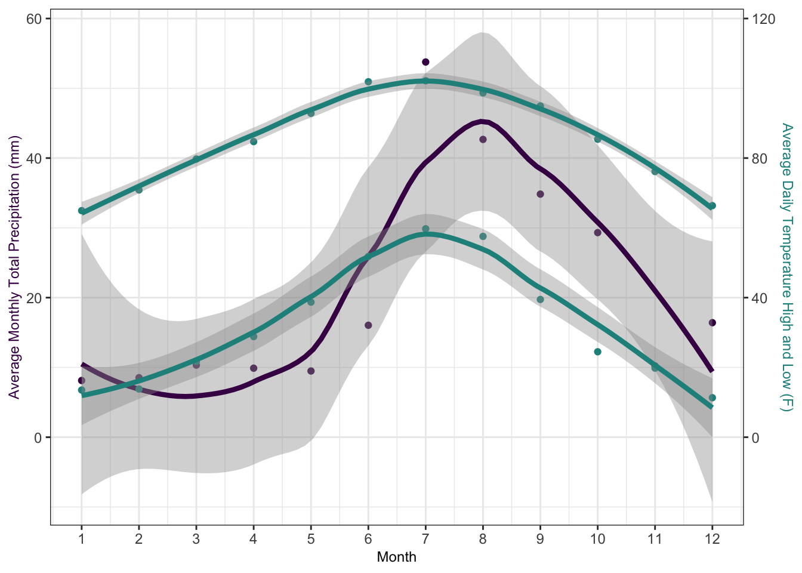
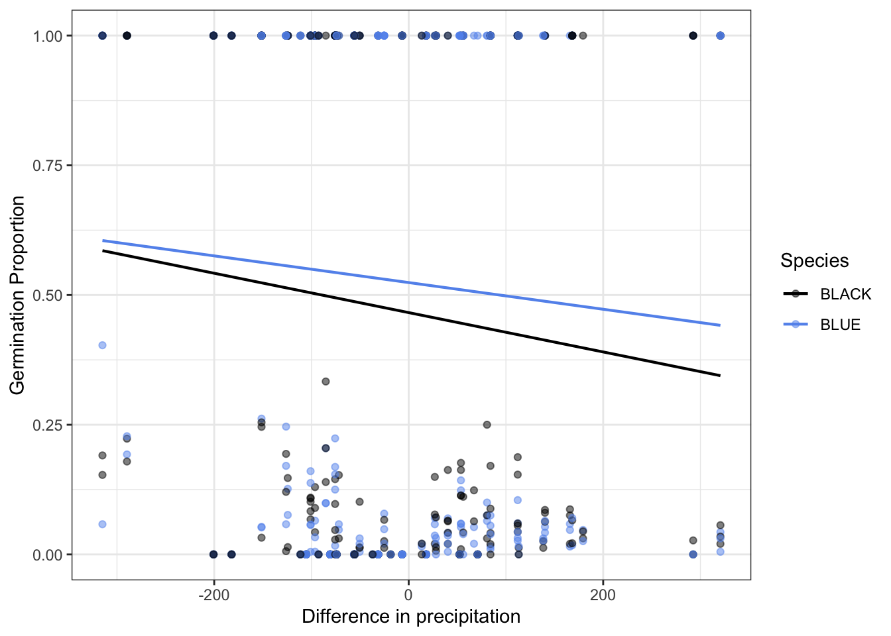

library(readr)
library(dplyr)
library(tidyr)
library(tidyverse)
library(ggplot2)
library(viridis) # colorblind friendly color palette
library(reshape2)
library(vegan)
library(lme4)
library(car)
library(readxl)
library(googlesheets4)
library(lubridate)
library(bbmle)
library(lmtest)
library(beepr)
library(survival)
library(ggsurvfit)
library(survminer)
library(emmeans)MVE Blue Seeds
Background
The Sevilleta Long Term Ecological Research (LTER) Program (Socorro, NM) rolled out a novel climate change experiment in 2019: the Mean-Variance Experiment (MVE). The experiment has been replicated in four ecosystems to date but the focus of this document is on the experimental infrastructure found in the Great Plains Grassland ecosystem, dominated by blue grama grass (Bouteloua gracilis). Hence Mean-Variance Blue or MVE Blue. The ecosystem is dominated by blue grama grass but the adjacent ecosystem, Chihuahuan Desert Grassland, is dominated by black grama grass (Bouteloua eriopoda). Great Plains Grassland extends northward throughout central North America while Chihuahuan Desert Grassland extends southward into Mexico. Thus, under a more arid climate, we would expect Chihuahuan Desert Grassland to expand it’s range northward. The experimental infrastructure is set near the ecotone of these two ecosystems. More information on this experiment can be found here: https://sevlter.unm.edu/mean-variance-experiment/. To test the recruitment dynamics of these dominant plants under climate change, we added seeds of each species to the experimental plots from 2019-2023 and tracked their germination and survival biweekly during the growing season and monthly during the dormant season.
Objectives
- Read in relevant data (seed monitoring data for all five years, treatments, soil moisture data, climate data).
- Create new and necessary dataframes.
- Create graph of typical climate for temperature and precipitation.
- Find the best model for the germination data using year and mean and variance treatments as predictors
- Graph germination by year, mean, and variance by species.
- Figure out the 1-3 events each year where 90-95% of germination occurs and isolate germination and soil moisture to those events and build a model to understand how soil moisture determines germination probability. Graph.
- Find best model of survival by species, year, and mean and variance treatments. Or a model for each species. Graph.
- Test for legacy effects on germination by using precipitation whiplash or biomass. Graph.
Setup
Read in necessary packages.
Clean and Wrangle Data
Bring in seed monitoring data for all five years, keys, soil moisture data, and climate data.
Seed monitoring
So far we have “germ_19_23.csv”, which is all the toothpicks and only whether they germinated or not, and “germ_19_23_long_raw.csv”, which is the data in long form with toothpicks tracked over time.
Now, make a data frame that looks at the current year and past year cohorts (only) for each monsoon season. But first confirm that most germination happens in first two years.

# A tibble: 4 × 2
Germ_Year percent
<dbl> <dbl>
1 1 75.5
2 2 19.4
3 3 4.36
4 4 0.77775% of germinated seeds occur in their first year, 19% occur in second year, 4% in the third and 0.77% in 4th year.
Sufficient evidence to reduce to first year and second year. Use the long data that tracks each toothpick over time. This results in the dataset “blue_year_cohorts.csv” – not long form, only whether a toothpick germinated in Y1. and if not in Y1 then whether it germed in Y2.
Create a dataset limited to the major soil moisture germination events. Isolate data to the two (or three) events per year with the most germination. Then pair with soil moisture data from plots.
There’s one date for each year with the most germination event and then 4/5 years have a smaller secondary event. 2021 has several aftershock events.
[1] 8# A tibble: 8 × 6
# Groups: Obs_Date [8]
Obs_Date Obs_Year sum sumtotal percent_yr event_num
<date> <dbl> <dbl> <dbl> <dbl> <int>
1 2019-09-21 2019 120 124 0.968 1
2 2020-07-31 2020 582 603 0.965 2
3 2021-07-26 2021 477 638 0.748 3
4 2021-08-24 2021 60 638 0.0940 4
5 2022-07-05 2022 847 1048 0.808 5
6 2022-07-19 2022 115 1048 0.110 6
7 2023-08-10 2023 23 292 0.0788 7
8 2023-08-30 2023 269 292 0.921 8Determined events that contributed to over 5% of total germination for that year. Resulted in 8 events across all 5 years. Used the long raw data, limited to year 1 and 2. Removed all toothicks that germinated before event 1 so as not to inflate numerator or denominator. Then did that subsequently for all 8 events. Results in the file “germ_events_sm.csv”
Then, code from Kris Hall was used to process soil moisture data, resulting in 6 files (e.g.,“MVE-seedsMVE_PlainsGrassland_SoilMoistureTemperature_2018.csv”), one for every year from 2018-2023.
Then, clean-up climate data from EDI for met station 50 (near site). This results in “met_50.csv”
Lastly, I created a survival dataset taking the last observation day (+7 days, because assuming it didn’t die on the last day it was observed) and subtracting first observation day. If Status = 1, it died. If Status = 0, it was still alive at time of last census. This results in the file “surv_19_23.csv”
Read in Cleaned Data
These are all the datasets cleaned from above.
# reduced to only first germ
blue_19_23 <- read_csv("germ_19_23.csv")
# All binomial observations from first germ through survival
blue_19_23_long_raw <- read_csv("germ_19_23_long_raw.csv")
# This dataset is limited to planting year and planting year + 1.
# Not raw data. Did the toothpick germinate in Year X? Yes no
bluebyyear <- read_csv("blue_year_cohorts.csv")
# This dataset is limited to toothpicks in planting year and planting
# year + 1. Further, it's every toothpick (from present year or present
# year +1) that's able to germinate for one of 8 large rainfall events.
germ_sm <- read_csv("germ_events_sm.csv")
surv <- read_csv("surv_19_23.csv")
trts<-read.csv("MVE_treatments_allsites_2023_adj.csv")
sm_t_18 <- read_csv("MVE-seedsMVE_PlainsGrassland_SoilMoistureTemperature_2018.csv")
sm_t_19 <- read_csv("MVE-seedsMVE_PlainsGrassland_SoilMoistureTemperature_2019.csv")
sm_t_20 <- read_csv("MVE-seedsMVE_PlainsGrassland_SoilMoistureTemperature_2020.csv")
sm_t_21 <- read_csv("MVE-seedsMVE_PlainsGrassland_SoilMoistureTemperature_2021.csv")
sm_t_22 <- read_csv("MVE-seedsMVE_PlainsGrassland_SoilMoistureTemperature_2022.csv")
sm_t_23 <- read_csv("MVE-seedsMVE_PlainsGrassland_SoilMoistureTemperature_2023.csv")
met_00_23_50 <- read_csv("met_50.csv")Visualize rain + soil moisture for events
[1] "2020-07-04" "2020-07-05" "2020-07-06" "2020-07-07" "2020-07-08"
[6] "2020-07-09" "2020-07-10" "2020-07-11" "2020-07-12" "2020-07-13"
[11] "2020-07-14" "2020-07-15" "2020-07-16" "2020-07-17" "2020-07-18"
[16] "2020-07-19" "2020-07-20" "2020-07-21" "2020-07-22" "2020-07-23"
[21] "2020-07-24" "2020-07-25" "2020-07-26" "2020-07-27" "2020-07-28"
[26] "2020-07-29" "2020-07-30" "2020-07-31" "2020-08-01" [1] "2021-06-29" "2021-06-30" "2021-07-01" "2021-07-02" "2021-07-03"
[6] "2021-07-04" "2021-07-05" "2021-07-06" "2021-07-07" "2021-07-08"
[11] "2021-07-09" "2021-07-10" "2021-07-11" "2021-07-12" "2021-07-13"
[16] "2021-07-14" "2021-07-15" "2021-07-16" "2021-07-17" "2021-07-18"
[21] "2021-07-19" "2021-07-20" "2021-07-21" "2021-07-22" "2021-07-23"
[26] "2021-07-24" "2021-07-25" "2021-07-26" "2021-07-27" [1] "2021-07-28" "2021-07-29" "2021-07-30" "2021-07-31" "2021-08-01"
[6] "2021-08-02" "2021-08-03" "2021-08-04" "2021-08-05" "2021-08-06"
[11] "2021-08-07" "2021-08-08" "2021-08-09" "2021-08-10" "2021-08-11"
[16] "2021-08-12" "2021-08-13" "2021-08-14" "2021-08-15" "2021-08-16"
[21] "2021-08-17" "2021-08-18" "2021-08-19" "2021-08-20" "2021-08-21"
[26] "2021-08-22" "2021-08-23" "2021-08-24" "2021-08-25" [1] "2022-06-08" "2022-06-09" "2022-06-10" "2022-06-11" "2022-06-12"
[6] "2022-06-13" "2022-06-14" "2022-06-15" "2022-06-16" "2022-06-17"
[11] "2022-06-18" "2022-06-19" "2022-06-20" "2022-06-21" "2022-06-22"
[16] "2022-06-23" "2022-06-24" "2022-06-25" "2022-06-26" "2022-06-27"
[21] "2022-06-28" "2022-06-29" "2022-06-30" "2022-07-01" "2022-07-02"
[26] "2022-07-03" "2022-07-04" "2022-07-05" "2022-07-06"Graphs below show the 6 germination events (no soil moisture data for 2023) from 2019-2022. Vertical black line is germination event (Observation Date). Shows precipitation (yellow), average daily soil moisture (purple), and maximum daily soil moisture (turquoise) for the 28 days leading up to the Observation date.



This means we could characterize the soil moisture conditions that led to germination in a few different ways.
Consider taking the average soil moisture from the maximum soil moisture time to the germ date and the maximum leading up to it, and we see which is a better predictor of germination because drought plots might experience a similar maximum but not retain soil moisture, and the retention is actually the key to triggering mass germination. If this is true the average would be a better predictor.
Create soil moisture variables
Four measurements of soil moisture for model comparison:
- Average maximum soil moisture in 7 days leading up to census date
- Average soil moisture in 7 days leading up to census data
- Maximum soil moisture in 28 days leading up to census date
- Average maximum soil moisture from date of maximum to census date
sm_event_vars <- read_csv("sm_event_vars.csv")
head(sm_event_vars)# A tibble: 6 × 6
Obs_Date Plot avg_7_max avg_7 avg_mons_max mons_max
<date> <dbl> <dbl> <dbl> <dbl> <dbl>
1 2019-09-21 1 0.0943 0.0872 0.0943 0.158
2 2019-09-21 2 0.0793 0.0714 0.0793 0.09
3 2019-09-21 3 0.089 0.0841 0.089 0.104
4 2019-09-21 4 0.0752 0.0701 0.0752 0.081
5 2019-09-21 5 0.0815 0.0759 0.0815 0.128
6 2019-09-21 6 0.0751 0.0693 0.0751 0.084Data Exploration
Our data objects are blue_19_23, blue_19_23_long_raw, bluebyyear trts, sm_t_18:sm_t_23, met_00_23_50
summary(blue_19_23) # whether a toothpick germinated or not Plot Corner Species Row
Min. : 1.0 Length:26581 Length:26581 Min. :1.000
1st Qu.: 8.0 Class :character Class :character 1st Qu.:2.000
Median :15.0 Mode :character Mode :character Median :3.000
Mean :15.5 Mean :2.795
3rd Qu.:23.0 3rd Qu.:4.000
Max. :30.0 Max. :5.000
NA's :1 NA's :5
Column TP_ID Add_Year Obs_Date
Length:26581 Length:26581 Min. :2019 Min. :2019-09-07
Class :character Class :character 1st Qu.:2020 1st Qu.:2020-07-31
Mode :character Mode :character Median :2021 Median :2021-07-26
Mean :2021 Mean :2021-08-07
3rd Qu.:2022 3rd Qu.:2022-07-05
Max. :2023 Max. :2024-08-05
Germ.binom
Min. :0.0000
1st Qu.:0.0000
Median :0.0000
Mean :0.1356
3rd Qu.:0.0000
Max. :1.0000
NA's :1 # head(blue_19_23)
# str(blue_19_23)
sum(blue_19_23$Germ.binom, na.rm = TRUE)/(nrow(blue_19_23)-1)[1] 0.135553Overall germination rate of 13.5% across five years, both treatments, both species.
summary(bluebyyear) # whether a toothpick germinated in it's first or second year Plot Corner Species Row
Min. : 1.0 Length:50443 Length:50443 Min. :1.0
1st Qu.: 8.0 Class :character Class :character 1st Qu.:2.0
Median :16.0 Mode :character Mode :character Median :3.0
Mean :15.5 Mean :2.8
3rd Qu.:23.0 3rd Qu.:4.0
Max. :30.0 Max. :5.0
NA's :3 NA's :11
Column TP_ID Add_Year Obs_Date
Length:50443 Length:50443 Min. :2019 Min. :2019-09-07
Class :character Class :character 1st Qu.:2020 1st Qu.:2020-07-31
Mode :character Mode :character Median :2021 Median :2021-07-26
Mean :2021 Mean :2021-07-19
3rd Qu.:2022 3rd Qu.:2022-07-05
Max. :2023 Max. :2023-08-30
NA's :1 NA's :1
Germ.binom Obs_Year Year plot
Min. :0.00000 Min. :2019 Min. :1 Min. : 1.0
1st Qu.:0.00000 1st Qu.:2020 1st Qu.:1 1st Qu.: 8.0
Median :0.00000 Median :2021 Median :1 Median :16.0
Mean :0.05393 Mean :2021 Mean :1 Mean :15.5
3rd Qu.:0.00000 3rd Qu.:2022 3rd Qu.:1 3rd Qu.:23.0
Max. :1.00000 Max. :2023 Max. :1 Max. :30.0
NA's :3 NA's :1 NA's :1 NA's :3 # drop NAs in Add-Year, Obs_Date, and Germ_binom. Investigate later if you want
bluebyyear <- bluebyyear[!is.na(bluebyyear$Add_Year),]
bluebyyear <- bluebyyear[!is.na(bluebyyear$Obs_Date),]
bluebyyear <- bluebyyear[!is.na(bluebyyear$Germ.binom),]
bluebyyear$trial <- 1
bluebyyear %>%
group_by(Obs_Year) %>%
summarise(germ_prob = sum(Germ.binom)/sum(trial))# A tibble: 5 × 2
Obs_Year germ_prob
<dbl> <dbl>
1 2019 0.0117
2 2020 0.0718
3 2021 0.0644
4 2022 0.107
5 2023 0.0278Highest germination rate in 2022 at 10%. Lowest in 2019 at 1%.
# str(trts)
trts <- trts %>%
select(
site,
block,
plot,
mean_treatment,
var_treatment_2019_m,
var_treatment_2020_m,
var_treatment_2021_m,
var_treatment_2022_m,
var_treatment_2023_m,
var_treatment
)
head(trts) site block plot mean_treatment var_treatment_2019_m
1 meanvar_blue 1 1 ambient increase
2 meanvar_blue 1 2 ambient decrease
3 meanvar_blue 1 3 ambient ambient
4 meanvar_blue 1 4 reduced decrease
5 meanvar_blue 1 5 reduced increase
6 meanvar_blue 1 6 reduced ambient
var_treatment_2020_m var_treatment_2021_m var_treatment_2022_m
1 increase increase decrease
2 decrease decrease increase
3 ambient ambient ambient
4 decrease decrease decrease
5 increase increase increase
6 ambient ambient ambient
var_treatment_2023_m var_treatment
1 increase increase
2 decrease increase
3 ambient ambient
4 decrease increase
5 increase increase
6 ambient ambientTreatments for mean-variance blue. Increased variance treatments flipped at random from 2019-2022. Adjusted treatments because year variance treatments reflect treatment changes for November of that year. So if a plot went from increase (+50% precipitation) in 2021 to decrease (-50%) in 2022, the decrease didn’t happen until November of 2022. So monsoon rainfall for 2022 was actually under the “increase” treatment (+50%) in this example.
# summary(sm_t_20)
head(sm_t_20)# A tibble: 6 × 7
TIMESTAMP sensor_id sensor plot depth new value
<dttm> <chr> <chr> <chr> <dbl> <chr> <dbl>
1 2020-01-01 00:00:00 VWC_P1_12 VWC P1 12 <NA> 0.124
2 2020-01-01 00:00:00 T_P1_12 T P1 12 <NA> 1.17
3 2020-01-01 00:00:00 VWC_P1_22 VWC P1 22 <NA> 0.093
4 2020-01-01 00:00:00 T_P1_22 T P1 22 <NA> 2.8
5 2020-01-01 00:00:00 VWC_P1_37 VWC P1 37 <NA> 0.136
6 2020-01-01 00:00:00 T_P1_37 T P1 37 <NA> 4 Sensor data for 18/30 plots at mean-variance blue. sensor_id contains sensor type (temperature or volumentric water content), plot, and sensor depth (12, 22, or 37 cm).
summary(met_00_23_50) StationID Date_Time Date Year
Min. :50 Min. :2002-01-01 00:00:00 Min. :2002-01-01 Min. :2002
1st Qu.:50 1st Qu.:2007-09-10 07:00:00 1st Qu.:2007-09-10 1st Qu.:2007
Median :50 Median :2013-02-23 18:00:00 Median :2013-02-23 Median :2013
Mean :50 Mean :2013-02-12 12:26:56 Mean :2013-02-12 Mean :2013
3rd Qu.:50 3rd Qu.:2018-07-31 01:00:00 3rd Qu.:2018-07-31 3rd Qu.:2018
Max. :50 Max. :2023-12-31 23:00:00 Max. :2023-12-31 Max. :2023
Month Day_of_Month Julian_Day Hour
Min. : 1.000 Min. : 1.00 Min. : 1.0 Min. : 0.0
1st Qu.: 4.000 1st Qu.: 8.00 1st Qu.: 95.0 1st Qu.: 5.0
Median : 7.000 Median :16.00 Median :185.0 Median :12.0
Mean : 6.569 Mean :15.74 Mean :184.5 Mean :11.5
3rd Qu.:10.000 3rd Qu.:23.00 3rd Qu.:275.0 3rd Qu.:17.0
Max. :12.000 Max. :31.00 Max. :366.0 Max. :23.0
Temp_C Min_Temp_C Max_Temp_C Precipitation
Min. :-40.00 Min. :-40.000 Min. :-40.00 Min. : 0.00000
1st Qu.: 7.64 1st Qu.: 6.554 1st Qu.: 8.72 1st Qu.: 0.00000
Median : 16.17 Median : 15.170 Median : 17.18 Median : 0.00000
Mean : 15.43 Mean : 14.422 Mean : 16.45 Mean : 0.02873
3rd Qu.: 23.29 3rd Qu.: 22.320 3rd Qu.: 24.25 3rd Qu.: 0.00000
Max. : 40.60 Max. : 39.130 Max. : 41.79 Max. :28.90000
NA's :301 NA's :302 NA's :290 NA's :120 # head(met_00_23_50)
# str(met_00_23_50)Hourly climate data from Met Station 50, limited to date and time, temperature, and precipitation.
Below are soil moisture averages leading up to census dates and germination data from major census events.
str(sm_event_vars)spc_tbl_ [108 × 6] (S3: spec_tbl_df/tbl_df/tbl/data.frame)
$ Obs_Date : Date[1:108], format: "2019-09-21" "2019-09-21" ...
$ Plot : num [1:108] 1 2 3 4 5 6 7 8 9 10 ...
$ avg_7_max : num [1:108] 0.0943 0.0793 0.089 0.0752 0.0815 ...
$ avg_7 : num [1:108] 0.0872 0.0714 0.0841 0.0701 0.0759 ...
$ avg_mons_max: num [1:108] 0.0943 0.0793 0.089 0.0752 0.0815 ...
$ mons_max : num [1:108] 0.158 0.09 0.104 0.081 0.128 0.084 0.105 0.223 0.095 0.188 ...
- attr(*, "spec")=
.. cols(
.. Obs_Date = col_date(format = ""),
.. Plot = col_double(),
.. avg_7_max = col_double(),
.. avg_7 = col_double(),
.. avg_mons_max = col_double(),
.. mons_max = col_double()
.. )
- attr(*, "problems")=<externalptr> summary(sm_event_vars) Obs_Date Plot avg_7_max avg_7
Min. :2019-09-21 Min. : 1.0 Min. :0.06400 Min. :0.0586
1st Qu.:2020-07-31 1st Qu.: 5.0 1st Qu.:0.09342 1st Qu.:0.0865
Median :2021-08-09 Median : 9.5 Median :0.11693 Median :0.1090
Mean :2021-06-05 Mean : 9.5 Mean :0.12061 Mean :0.1134
3rd Qu.:2022-07-05 3rd Qu.:14.0 3rd Qu.:0.13832 3rd Qu.:0.1329
Max. :2022-07-19 Max. :18.0 Max. :0.20070 Max. :0.1910
NA's :16 NA's :16
avg_mons_max mons_max
Min. :0.06400 Min. :0.0720
1st Qu.:0.09342 1st Qu.:0.1442
Median :0.11693 Median :0.1735
Mean :0.12061 Mean :0.1733
3rd Qu.:0.13832 3rd Qu.:0.2102
Max. :0.20070 Max. :0.2990
NA's :16 NA's :16 # avg_7_max is the average of daily maximums in the 7 days leading up to the census date
# avg_7 is the true average of soil moisture in the 7 days leading up to the census date
# avg_mons_max is the average of daily maximum soil moisture from the date of the largest monsoon event in the month prior leading up to the germination event
# mons_max is the maximum soil moisture after the monsoon event
str(germ_sm)spc_tbl_ [75,713 × 11] (S3: spec_tbl_df/tbl_df/tbl/data.frame)
$ Plot : num [1:75713] 11 17 17 17 12 17 23 3 15 26 ...
$ Corner : chr [1:75713] "SW" "SW" "SW" "SW" ...
$ Species : chr [1:75713] "BLACK" "BLACK" "BLACK" "BLACK" ...
$ Row : num [1:75713] 5 5 3 3 5 5 5 5 5 1 ...
$ Column : chr [1:75713] "D" "I" "B" "D" ...
$ TP_ID : chr [1:75713] "201911BLACKSW5D" "201917BLACKSW5I" "201917BLACKSW3B" "201917BLACKSW3D" ...
$ Add_Year : num [1:75713] 2019 2019 2019 2019 2019 ...
$ Obs_Date : Date[1:75713], format: "2019-09-21" "2019-09-21" ...
$ Germ.binom: num [1:75713] 0 0 0 0 0 0 0 0 0 0 ...
$ Obs_Year : num [1:75713] 2019 2019 2019 2019 2019 ...
$ Year : num [1:75713] 1 1 1 1 1 1 1 1 1 1 ...
- attr(*, "spec")=
.. cols(
.. Plot = col_double(),
.. Corner = col_character(),
.. Species = col_character(),
.. Row = col_double(),
.. Column = col_character(),
.. TP_ID = col_character(),
.. Add_Year = col_double(),
.. Obs_Date = col_date(format = ""),
.. Germ.binom = col_double(),
.. Obs_Year = col_double(),
.. Year = col_double()
.. )
- attr(*, "problems")=<externalptr> summary(germ_sm) Plot Corner Species Row
Min. : 1.0 Length:75713 Length:75713 Min. :1.00
1st Qu.: 8.0 Class :character Class :character 1st Qu.:2.00
Median :16.0 Mode :character Mode :character Median :3.00
Mean :15.5 Mean :2.78
3rd Qu.:23.0 3rd Qu.:4.00
Max. :30.0 Max. :5.00
NA's :2 NA's :10
Column TP_ID Add_Year Obs_Date
Length:75713 Length:75713 Min. :2019 Min. :2019-09-21
Class :character Class :character 1st Qu.:2020 1st Qu.:2021-07-26
Mode :character Mode :character Median :2021 Median :2022-07-05
Mean :2021 Mean :2022-02-08
3rd Qu.:2022 3rd Qu.:2023-08-10
Max. :2023 Max. :2023-08-30
Germ.binom Obs_Year Year
Min. :0.00000 Min. :2019 Min. :1.000
1st Qu.:0.00000 1st Qu.:2021 1st Qu.:1.000
Median :0.00000 Median :2022 Median :1.000
Mean :0.03785 Mean :2022 Mean :1.455
3rd Qu.:0.00000 3rd Qu.:2023 3rd Qu.:2.000
Max. :1.00000 Max. :2023 Max. :2.000
NA's :2 Characterize and Graph Climate
The climate data are collected from meteorological stations at the Sevilleta NWR. These data come from met station 50, which is the nearest station to MVE Blue. Data began in 2000 and continues through 2023. Data is organized by date and time, temperature in celsius per hour, and minimum and maximum temperature for hour, total precipitation per hour in millimeters. I’m interested in the average range of temperatures for each season and the average annual and seasonal precipitation. Data comes from here(https://portal.edirepository.org/nis/mapbrowse?packageid=knb-lter-sev.1.17)
I want a graph where the x-axis is days of the year and there are three lines, each with confidence bands: average daily precip, daily high temperature, daily low temperature.

Figure 1. Climate averages for Meteorological Station 50 near Mean-Variance Blue Experiment from 2000-2023. Purple dots represent total monthly precipitation in millimeters, averaged over 2000-2023. Turquoise dots represent monthly average daily minimum and maximum temperatures in Fahrenheit from 2000-2023.
Simple model of germination using Year and Treatments
Make a generalized linear mixed model with a binomial or bernoulli distribution and corner, plot, and block, and maybe Year as random effects. Possible fixed effects are species, mean treatment, variance treatment, Year, annual rainfall, or monsoon rainfall.
You’ll need to remove toothpicks in the NW corner in 2019 since those were planted among adult blue grama grass to test facilitation.
# reminder blue_19_23 is only whether each toothpick germinated or not over it's lifetime
#summary(blue_19_23)
#head(blue_19_23)
#str(blue_19_23)
# Overall germination rate
sum(blue_19_23$Germ.binom, na.rm = TRUE)/(nrow(blue_19_23)-1)[1] 0.135553# Why did I subtract 1?
#head(trts)
# join treatments and germ dataset
trts$Plot <- trts$plot
blue_19_23_trt <- left_join(blue_19_23, trts, by = "Plot")
# prepare for model
# Remove toothpicks with Corner == NE and Add_Year == 2019
blue_19_23_trt_NE19rm <-
blue_19_23_trt %>%
filter(!(Add_Year == 2019 & Corner == "NE"))
# separate dataset by species
bluegrama <-
blue_19_23_trt_NE19rm %>%
filter(Species == "BLUE")
blackgrama <-
blue_19_23_trt_NE19rm %>%
filter(Species == "BLACK")Try generalized linear mixed effects models for the simplest dataset blue_19_23. This considers what year the seeds were planted but not necessarily the year they germinated. This is only the probability of whether a given seed germinated or not over the 5 years.
# Try both species together first
m0 <- glmer(Germ.binom ~ 1 + (1|block/Plot/Corner) + (1|Add_Year), family = binomial, data = blue_19_23_trt_NE19rm)
# ignore Add Year
m0b <- glmer(Germ.binom ~ 1 + (1|block/Plot/Corner), family = binomial, data = blue_19_23_trt_NE19rm)
# just mean treatment
m1 <- glmer(Germ.binom ~ mean_treatment + (1|block/Plot/Corner) + (1|Add_Year), family = binomial, data = blue_19_23_trt_NE19rm)
# just variance treatment
m2 <- glmer(Germ.binom ~ var_treatment + (1|block/Plot/Corner) + (1|Add_Year), family = binomial, data = blue_19_23_trt_NE19rm)
# just Species
m3 <- glmer(Germ.binom ~ Species + (1|block/Plot/Corner) + (1|Add_Year), family = binomial, data = blue_19_23_trt_NE19rm)
# mean and variance treatments
m4 <- glmer(Germ.binom ~ var_treatment + mean_treatment + (1|block/Plot/Corner) + (1|Add_Year), family = binomial, data = blue_19_23_trt_NE19rm)
# interaction between mean and variance
m5 <- glmer(Germ.binom ~ var_treatment + mean_treatment + mean_treatment*var_treatment + (1|block/Plot/Corner) + (1|Add_Year), family = binomial, data = blue_19_23_trt_NE19rm)
# just Add Year as a fixed effect
m6 <- glmer(Germ.binom ~ Add_Year + (1|block/Plot/Corner), family = binomial, data = blue_19_23_trt_NE19rm)Warning in checkConv(attr(opt, "derivs"), opt$par, ctrl = control$checkConv, :
Model failed to converge with max|grad| = 0.00422675 (tol = 0.002, component 1)Warning in checkConv(attr(opt, "derivs"), opt$par, ctrl = control$checkConv, : Model is nearly unidentifiable: very large eigenvalue
- Rescale variables?;Model is nearly unidentifiable: large eigenvalue ratio
- Rescale variables?# test each model against null model
# lrtest(m0,m6)
# lrtest(m0b,m6)
ICtab(m0,m0b,m1,m2,m3,m4,m5,m6) dAIC df
m0 0.0 5
m1 0.2 6
m5 1.7 8
m2 1.9 6
m3 2.0 6
m4 2.1 7
m0b 441.0 4
m6 443.0 5 VarCorr(m0) Groups Name Std.Dev.
Corner:Plot:block (Intercept) 0.34182
Plot:block (Intercept) 0.32466
block (Intercept) 0.15171
Add_Year (Intercept) 0.44794 Temporal and spatial heterogeneity explain a lot of the data. Super not helpful to remove Add-Year as a random effect. Best models are m0, m1, m5, m2, m3, m4 (all very close and within 2 dAIC). Did not help to scale Add_year.
No differences by treatments, not including species as a factor.
Below, try models for each species.
# try blue grama
g0 <- glmer(Germ.binom ~ 1 + (1|block/Plot/Corner) + (1|Add_Year), family = binomial, data = bluegrama)
g1 <- glmer(Germ.binom ~ mean_treatment + (1|block/Plot/Corner) + (1|Add_Year), family = binomial, data = bluegrama)
g2 <- glmer(Germ.binom ~ var_treatment + (1|block/Plot/Corner) + (1|Add_Year), family = binomial, data = bluegrama)
g3 <- glmer(Germ.binom ~ var_treatment + mean_treatment + (1|block/Plot/Corner) + (1|Add_Year), family = binomial, data = bluegrama)
g4 <- glmer(Germ.binom ~ var_treatment + mean_treatment + mean_treatment*var_treatment + (1|block/Plot/Corner) + (1|Add_Year), family = binomial, data = bluegrama)
# test each model against null model
# lrtest(g0,g4)
ICtab(g0,g1,g2,g3,g4) dAIC df
g0 0.0 5
g1 1.0 6
g2 1.8 6
g3 2.8 7
g4 3.2 8 VarCorr(g0) Groups Name Std.Dev.
Corner:Plot:block (Intercept) 0.37718
Plot:block (Intercept) 0.35300
block (Intercept) 0.11977
Add_Year (Intercept) 0.41442 Null model is just as good as any other model (no significant predictors).
Try black grama below.
# try black grama
e0 <- glmer(Germ.binom ~ 1 + (1|block/Plot/Corner) + (1|Add_Year), family = binomial, data = blackgrama)
e1 <- glmer(Germ.binom ~ mean_treatment + (1|block/Plot/Corner) + (1|Add_Year), family = binomial, data = blackgrama)
e2 <- glmer(Germ.binom ~ var_treatment + (1|block/Plot/Corner) + (1|Add_Year), family = binomial, data = blackgrama)
e3 <- glmer(Germ.binom ~ var_treatment + mean_treatment + (1|block/Plot/Corner) + (1|Add_Year), family = binomial, data = blackgrama)
e4 <- glmer(Germ.binom ~ var_treatment + mean_treatment + mean_treatment*var_treatment + (1|block/Plot/Corner) + (1|Add_Year), family = binomial, data = blackgrama)
# test each model against null mode
# lrtest(e0,e4)
ICtab(e0,e1,e2,e3,e4) dAIC df
e1 0.0 6
e0 0.5 5
e4 1.3 8
e3 2.0 7
e2 2.5 6 VarCorr(e0) Groups Name Std.Dev.
Corner:Plot:block (Intercept) 0.34980
Plot:block (Intercept) 0.31990
block (Intercept) 0.17695
Add_Year (Intercept) 0.62291 Mean and variance treatments are not significant predictors of germination for blue or black grama. The null model (constant germination) was the best fit for the data at this time.
Next steps: Try including Monsoon rainfall, total annual precip.
We care about Year in that it might interact with the treatment.
Try limiting to year planted or year after. So each “Observation Year” includes the seeds planted that year and the ungerminated seeds from the year prior.
Year Cohort Model
Create new variables with meteorological data and treatments. Make treatments numeric.
Try creating a few different scaled or combined variables for modeling. Try simplifying random effect structure (limit to 1|Quad_ID and/or 1|Obs_Year) Try combining mean and variance treatment into one.
blue_yr_trt$Obs_Year_sc_2 <- blue_yr_trt$Obs_Year - mean(blue_yr_trt$Obs_Year)
blue_yr_trt$sum_pp_sc_2 <- blue_yr_trt$sum_pp - mean(blue_yr_trt$sum_pp)
blue_yr_trt$sum_mons_pp_sc_2 <- blue_yr_trt$sum_mons_pp - mean(blue_yr_trt$sum_mons_pp)
blue_yr_trt$Quad_ID <- paste0(blue_yr_trt$Add_Year,blue_yr_trt$plot,blue_yr_trt$Species,blue_yr_trt$Corner)
blue_yr_trt$Quad_ID_ne_yr <- paste0(blue_yr_trt$plot,blue_yr_trt$Species,blue_yr_trt$Corner)
blue_yr_trt$meanvar <- paste0(blue_yr_trt$mean_treatment,blue_yr_trt$var_treatment)Try new models. Try a different optimizer – didn’t work. Try a fixed effects model only – convergence failure went away. Check for overdispersion
Question: How does a changing climate mean and variance affect co-domininant grass germination?
# Try both species together first
m0 <- glm(Germ.binom ~ 1, family = binomial, data = blue_yr_trt)
m1 <- glmer(Germ.binom ~ 1 + (1|Obs_Year_sc), family = binomial, data = blue_yr_trt)
m2 <- glmer(Germ.binom ~ 1 + (1|block), family = binomial, data = blue_yr_trt)
m3 <- glmer(Germ.binom ~ 1 + (1|Obs_Year_sc) + (1|block), family = binomial, data = blue_yr_trt)
mall <- glmer(Germ.binom ~ Species*mean_treatment*var_treatment*sum_pp_sc + (1|block), family = binomial, data = blue_yr_trt)
mall2 <- glmer(Germ.binom ~ Species*mean_treatment*var_treatment + (1|Obs_Year_sc) + (1|block), family = binomial, data = blue_yr_trt)
mall3 <- glmer(Germ.binom ~ Species*mean_treatment*var_treatment + (1|sum_pp_sc) + (1|block), family = binomial, data = blue_yr_trt)
mall5 <- glmer(Germ.binom ~ mean_treatment*var_treatment*sum_pp_sc + (1|block), family = binomial, data = blue_yr_trt)
m_pp <- glmer(Germ.binom ~ sum_pp_sc + (1|block), family = binomial, data = blue_yr_trt)
mall6 <- glmer(Germ.binom ~ mean_treatment*sum_pp_sc + (1|block), family = binomial, data = blue_yr_trt)
mall7 <- glmer(Germ.binom ~ var_treatment*sum_pp_sc + (1|block), family = binomial, data = blue_yr_trt)
mall8 <- glmer(Germ.binom ~ var_treatment*mean_treatment + (1|sum_pp_sc) + (1|block), family = binomial, data = blue_yr_trt)
mall9 <- glmer(Germ.binom ~ var_treatment*mean_treatment + (1|Obs_Year_sc) + (1|block), family = binomial, data = blue_yr_trt)
ICtab(m0,m1,m2,m3,mall,mall2,mall3, mall5, m_pp, mall6, mall7, mall8, mall9) dAIC df
mall8 0.0 6
mall9 0.0 6
mall2 4.0 10
mall3 4.0 10
m3 19.8 3
m1 84.1 2
mall 335.4 17
mall5 371.6 9
mall6 392.1 5
mall7 402.4 5
m_pp 408.0 3
m2 782.4 2
m0 839.8 1 # mall8 or 9 are best
summary(mall8)Generalized linear mixed model fit by maximum likelihood (Laplace
Approximation) [glmerMod]
Family: binomial ( logit )
Formula: Germ.binom ~ var_treatment * mean_treatment + (1 | sum_pp_sc) +
(1 | block)
Data: blue_yr_trt
AIC BIC logLik -2*log(L) df.resid
19548.0 19600.2 -9768.0 19536.0 44443
Scaled residuals:
Min 1Q Median 3Q Max
-0.4218 -0.2913 -0.2398 -0.1614 8.2150
Random effects:
Groups Name Variance Std.Dev.
sum_pp_sc (Intercept) 0.42146 0.6492
block (Intercept) 0.04045 0.2011
Number of obs: 44449, groups: sum_pp_sc, 5; block, 5
Fixed effects:
Estimate Std. Error z value
(Intercept) -2.75376 0.30209 -9.116
var_treatmentincrease -0.21500 0.05695 -3.775
mean_treatmentreduced -0.29811 0.06804 -4.382
var_treatmentincrease:mean_treatmentreduced 0.24784 0.08413 2.946
Pr(>|z|)
(Intercept) < 2e-16 ***
var_treatmentincrease 0.00016 ***
mean_treatmentreduced 1.18e-05 ***
var_treatmentincrease:mean_treatmentreduced 0.00322 **
---
Signif. codes: 0 '***' 0.001 '**' 0.01 '*' 0.05 '.' 0.1 ' ' 1
Correlation of Fixed Effects:
(Intr) vr_trt mn_trt
vr_trtmntnc -0.109
mn_trtmntrd -0.091 0.524
vr_trtmnt:_ 0.072 -0.675 -0.807#mall
# lrtest(m_mons_max, m3)
# Check for overdispersion
# deviance/residual df
19536.0/44443 [1] 0.4395743Best model is one with an interactive effect of mean and variance treatment with block and year (either precip or year) as random effects.
Anova(mall8)Analysis of Deviance Table (Type II Wald chisquare tests)
Response: Germ.binom
Chisq Df Pr(>Chisq)
var_treatment 5.8645 1 0.0154495 *
mean_treatment 11.5239 1 0.0006871 ***
var_treatment:mean_treatment 8.6792 1 0.0032186 **
---
Signif. codes: 0 '***' 0.001 '**' 0.01 '*' 0.05 '.' 0.1 ' ' 1Anova(mall9)Analysis of Deviance Table (Type II Wald chisquare tests)
Response: Germ.binom
Chisq Df Pr(>Chisq)
var_treatment 5.8791 1 0.015322 *
mean_treatment 11.5515 1 0.000677 ***
var_treatment:mean_treatment 8.6875 1 0.003204 **
---
Signif. codes: 0 '***' 0.001 '**' 0.01 '*' 0.05 '.' 0.1 ' ' 1summary(mall8)Generalized linear mixed model fit by maximum likelihood (Laplace
Approximation) [glmerMod]
Family: binomial ( logit )
Formula: Germ.binom ~ var_treatment * mean_treatment + (1 | sum_pp_sc) +
(1 | block)
Data: blue_yr_trt
AIC BIC logLik -2*log(L) df.resid
19548.0 19600.2 -9768.0 19536.0 44443
Scaled residuals:
Min 1Q Median 3Q Max
-0.4218 -0.2913 -0.2398 -0.1614 8.2150
Random effects:
Groups Name Variance Std.Dev.
sum_pp_sc (Intercept) 0.42146 0.6492
block (Intercept) 0.04045 0.2011
Number of obs: 44449, groups: sum_pp_sc, 5; block, 5
Fixed effects:
Estimate Std. Error z value
(Intercept) -2.75376 0.30209 -9.116
var_treatmentincrease -0.21500 0.05695 -3.775
mean_treatmentreduced -0.29811 0.06804 -4.382
var_treatmentincrease:mean_treatmentreduced 0.24784 0.08413 2.946
Pr(>|z|)
(Intercept) < 2e-16 ***
var_treatmentincrease 0.00016 ***
mean_treatmentreduced 1.18e-05 ***
var_treatmentincrease:mean_treatmentreduced 0.00322 **
---
Signif. codes: 0 '***' 0.001 '**' 0.01 '*' 0.05 '.' 0.1 ' ' 1
Correlation of Fixed Effects:
(Intr) vr_trt mn_trt
vr_trtmntnc -0.109
mn_trtmntrd -0.091 0.524
vr_trtmnt:_ 0.072 -0.675 -0.807summary(mall9)Generalized linear mixed model fit by maximum likelihood (Laplace
Approximation) [glmerMod]
Family: binomial ( logit )
Formula: Germ.binom ~ var_treatment * mean_treatment + (1 | Obs_Year_sc) +
(1 | block)
Data: blue_yr_trt
AIC BIC logLik -2*log(L) df.resid
19548.0 19600.2 -9768.0 19536.0 44443
Scaled residuals:
Min 1Q Median 3Q Max
-0.4218 -0.2913 -0.2398 -0.1614 8.2150
Random effects:
Groups Name Variance Std.Dev.
Obs_Year_sc (Intercept) 0.42145 0.6492
block (Intercept) 0.04045 0.2011
Number of obs: 44449, groups: Obs_Year_sc, 5; block, 5
Fixed effects:
Estimate Std. Error z value
(Intercept) -2.75376 0.30138 -9.137
var_treatmentincrease -0.21500 0.05690 -3.778
mean_treatmentreduced -0.29812 0.06798 -4.385
var_treatmentincrease:mean_treatmentreduced 0.24785 0.08409 2.947
Pr(>|z|)
(Intercept) < 2e-16 ***
var_treatmentincrease 0.000158 ***
mean_treatmentreduced 1.16e-05 ***
var_treatmentincrease:mean_treatmentreduced 0.003204 **
---
Signif. codes: 0 '***' 0.001 '**' 0.01 '*' 0.05 '.' 0.1 ' ' 1
Correlation of Fixed Effects:
(Intr) vr_trt mn_trt
vr_trtmntnc -0.114
mn_trtmntrd -0.096 0.524
vr_trtmnt:_ 0.077 -0.675 -0.807mall9a <- glmer(Germ.binom ~ var_treatment*mean_treatment + (1|Obs_Year_sc) + (1|block), family = binomial, data = blue_yr_trt)
mall9b <- glmer(Germ.binom ~ 0 + var_treatment:mean_treatment + (1|Obs_Year_sc) + (1|block), family = binomial, data = blue_yr_trt)
summary(mall9b)Generalized linear mixed model fit by maximum likelihood (Laplace
Approximation) [glmerMod]
Family: binomial ( logit )
Formula: Germ.binom ~ 0 + var_treatment:mean_treatment + (1 | Obs_Year_sc) +
(1 | block)
Data: blue_yr_trt
AIC BIC logLik -2*log(L) df.resid
19548.0 19600.2 -9768.0 19536.0 44443
Scaled residuals:
Min 1Q Median 3Q Max
-0.4218 -0.2913 -0.2398 -0.1614 8.2150
Random effects:
Groups Name Variance Std.Dev.
Obs_Year_sc (Intercept) 0.42145 0.6492
block (Intercept) 0.04045 0.2011
Number of obs: 44449, groups: Obs_Year_sc, 5; block, 5
Fixed effects:
Estimate Std. Error z value
var_treatmentambient:mean_treatmentambient -2.7537 0.2998 -9.186
var_treatmentincrease:mean_treatmentambient -2.9687 0.2985 -9.946
var_treatmentambient:mean_treatmentreduced -3.0519 0.3010 -10.139
var_treatmentincrease:mean_treatmentreduced -3.0190 0.2984 -10.117
Pr(>|z|)
var_treatmentambient:mean_treatmentambient <2e-16 ***
var_treatmentincrease:mean_treatmentambient <2e-16 ***
var_treatmentambient:mean_treatmentreduced <2e-16 ***
var_treatmentincrease:mean_treatmentreduced <2e-16 ***
---
Signif. codes: 0 '***' 0.001 '**' 0.01 '*' 0.05 '.' 0.1 ' ' 1
Correlation of Fixed Effects:
vr_trtmntmbnt:mn_trtmntm vr_trtmntncrs:mn_trtmntm
vr_trtmntncrs:mn_trtmntm 0.982
vr_trtmntmbnt:mn_trtmntr 0.974 0.979
vr_trtmntncrs:mn_trtmntr 0.982 0.986
vr_trtmntmbnt:mn_trtmntr
vr_trtmntncrs:mn_trtmntm
vr_trtmntmbnt:mn_trtmntr
vr_trtmntncrs:mn_trtmntr 0.979 # this does give predicted probabilities for each group (ignoring random effects) because predictors are categorical
plogis(fixef(mall9b)) var_treatmentambient:mean_treatmentambient
0.05987561
var_treatmentincrease:mean_treatmentambient
0.04885804
var_treatmentambient:mean_treatmentreduced
0.04513724
var_treatmentincrease:mean_treatmentreduced
0.04657441 # highest germination (6%) is in ambient conditions
Anova(mall9)Analysis of Deviance Table (Type II Wald chisquare tests)
Response: Germ.binom
Chisq Df Pr(>Chisq)
var_treatment 5.8791 1 0.015322 *
mean_treatment 11.5515 1 0.000677 ***
var_treatment:mean_treatment 8.6875 1 0.003204 **
---
Signif. codes: 0 '***' 0.001 '**' 0.01 '*' 0.05 '.' 0.1 ' ' 1emmeans(mall9, ~ var_treatment:mean_treatment) var_treatment mean_treatment emmean SE df asymp.LCL asymp.UCL
ambient ambient -2.75 0.301 Inf -3.34 -2.16
increase ambient -2.97 0.300 Inf -3.56 -2.38
ambient reduced -3.05 0.303 Inf -3.64 -2.46
increase reduced -3.02 0.300 Inf -3.61 -2.43
Results are given on the logit (not the response) scale.
Confidence level used: 0.95 # Can I just transform these and use them for graphing?Graph germination by year and treatments
Graph it so two panels are the two mean treatments and -axis are variance treatments bar graphs of estimated proportion of germination by species and year.
Use original data (no observation year cohorts, Year Added only). Prep data below.
blue_19_23_trt_NE19rm$p_hat <- blue_19_23_trt_NE19rm$Germ.binom/1
germ_summary <- blue_19_23_trt_NE19rm %>%
group_by(Add_Year, mean_treatment, var_treatment, Species) %>% summarize(avg_germ = mean(p_hat))
germ_summary_all <- blue_19_23_trt_NE19rm %>%
group_by(mean_treatment, var_treatment, Species) %>% summarize(avg_germ = mean(p_hat))Plot all years together.
germ_all <- ggplot(germ_summary_all, aes(x=var_treatment, y = avg_germ, group = Species, fill = Species, na.rm = TRUE)) + scale_fill_manual(values=c("black","cornflowerblue")) + geom_col(position = position_dodge()) + facet_grid(. ~ mean_treatment) + labs(x = "Variance Treatment", y = "Estimated Germination Probability") + theme_bw()
germ_all
ggsave("Germ_All.jpg", germ_all, width = 7, height = 7)Species functionally the same for all treatments, no major differences between treatments but lowest germination in reduced mean and ambient variance treatment.
Break out each year.
germ_yr <- ggplot(germ_summary, aes(x=var_treatment, y = avg_germ, group = Species, fill = Species, na.rm = TRUE)) + scale_fill_manual(values=c("black","cornflowerblue")) + geom_col(position = position_dodge()) + facet_grid(Add_Year ~ mean_treatment) + labs(title = "Germination of blue and black grama by Year Added Cohort", x = "Variance Treatment", y = "Estimated Germination Probability") + theme_bw()
germ_yrggsave("GermxAdd_Year.jpg", germ_yr, width = 7, height = 12)High interannual variation in germination between species and treatments, dependent on rainfall.
Try it using Observation Year cohorts.
blue_yr_trt$p_hat <- blue_yr_trt$Germ.binom/1
# This is the last version of blue_yr_trt
# Save is as csv and use above
write_csv(blue_yr_trt, "blue_yr_trt.csv")
blue_19_23_trt_NE19rm$p_hat <- blue_19_23_trt_NE19rm$Germ.binom/1
germ_summary <- blue_yr_trt %>%
group_by(Obs_Year, mean_treatment, var_treatment, Species) %>% summarize(avg_germ = mean(p_hat))
germ_summary_all <- blue_19_23_trt_NE19rm %>%
group_by(mean_treatment, var_treatment, Species) %>% summarize(avg_germ = mean(p_hat))Graph by Obs year.
germ_yr <- ggplot(germ_summary, aes(x=var_treatment, y = avg_germ, group = Species, fill = Species, na.rm = TRUE)) + scale_fill_manual(values=c("black","cornflowerblue")) + geom_col(position = position_dodge()) + facet_grid(Obs_Year ~ mean_treatment) + labs(x = "Variance Treatment", y = "Estimated Germination Probability") + theme_bw()
germ_yr
ggsave("GermxObs_Year.jpg", germ_yr, width = 7, height = 12)Soil Moisture Model & Graph Germination Events
# Merge germination data from major soil moisture events with soil moisture data from major events, join by Obs_Date and Plot
# str(sm_event_vars)
# str(germ_sm)
germ_sm_df <- left_join(sm_event_vars, germ_sm, by = join_by(Plot == Plot, Obs_Date == Obs_Date))
germ_sm_df$Obs_Year_sc <- germ_sm_df$Obs_Year - 2018
summary(germ_sm_df) Obs_Date Plot avg_7_max avg_7
Min. :2019-09-21 Min. : 1.000 Min. :0.0640 Min. :0.0586
1st Qu.:2020-07-31 1st Qu.: 5.000 1st Qu.:0.0944 1st Qu.:0.0869
Median :2021-08-24 Median : 9.000 Median :0.1184 Median :0.1104
Mean :2021-07-16 Mean : 9.472 Mean :0.1221 Mean :0.1148
3rd Qu.:2022-07-05 3rd Qu.:14.000 3rd Qu.:0.1392 3rd Qu.:0.1337
Max. :2022-07-19 Max. :18.000 Max. :0.2007 Max. :0.1910
NA's :5290 NA's :5290
avg_mons_max mons_max Corner Species
Min. :0.0640 Min. :0.0720 Length:33049 Length:33049
1st Qu.:0.0944 1st Qu.:0.1510 Class :character Class :character
Median :0.1184 Median :0.1770 Mode :character Mode :character
Mean :0.1221 Mean :0.1773
3rd Qu.:0.1392 3rd Qu.:0.2120
Max. :0.2007 Max. :0.2990
NA's :5290 NA's :5290
Row Column TP_ID Add_Year
Min. :1.000 Length:33049 Length:33049 Min. :2019
1st Qu.:2.000 Class :character Class :character 1st Qu.:2020
Median :3.000 Mode :character Mode :character Median :2021
Mean :2.785 Mean :2021
3rd Qu.:4.000 3rd Qu.:2021
Max. :5.000 Max. :2022
NA's :4
Germ.binom Obs_Year Year Obs_Year_sc
Min. :0.00000 Min. :2019 Min. :1.000 Min. :1.000
1st Qu.:0.00000 1st Qu.:2020 1st Qu.:1.000 1st Qu.:2.000
Median :0.00000 Median :2021 Median :1.000 Median :3.000
Mean :0.04862 Mean :2021 Mean :1.447 Mean :2.955
3rd Qu.:0.00000 3rd Qu.:2022 3rd Qu.:2.000 3rd Qu.:4.000
Max. :1.00000 Max. :2022 Max. :2.000 Max. :4.000
germ_sm_df_narm <- germ_sm_df[which(complete.cases(germ_sm_df) == TRUE),]
# bring in block
germ_sm_df_narm <- left_join(germ_sm_df_narm, trts, by=join_by(Plot))
# str(germ_sm_df_narm)
germ_sm_df_narm <- germ_sm_df_narm %>%
mutate(avg_7_max_per = avg_7_max*100,
avg_7_per = avg_7*100,
avg_mons_max_per = avg_mons_max*100,
mons_max_per = mons_max*100)Find the best model for germination probability with soil moisture.
m0 <- glm(Germ.binom ~ 1, family = binomial, data = germ_sm_df_narm)
m1 <- glmer(Germ.binom ~ 1 + (1|Obs_Year_sc), family = binomial, data = germ_sm_df_narm)
m2 <- glmer(Germ.binom ~ 1 + (1|block), family = binomial, data = germ_sm_df_narm)
m3 <- glmer(Germ.binom ~ 1 + (1|Obs_Year_sc) + (1|block), family = binomial, data = germ_sm_df_narm)
m_max_7 <- glmer(Germ.binom ~ avg_7_max_per + (1|Obs_Year_sc) + (1|block), family = binomial, data = germ_sm_df_narm)
m_sp <- glmer(Germ.binom ~ Species + (1|Obs_Year_sc) + (1|block), family = binomial, data = germ_sm_df_narm)
m_avg_7 <- glmer(Germ.binom ~ avg_7_per + (1|Obs_Year_sc) + (1|block), family = binomial, data = germ_sm_df_narm)
m_mons_avg <- glmer(Germ.binom ~ avg_mons_max_per + (1|Obs_Year_sc) + (1|block), family = binomial, data = germ_sm_df_narm)
m_mons_max <- glmer(Germ.binom ~ mons_max_per + (1|Obs_Year_sc) + (1|block), family = binomial, data = germ_sm_df_narm)
ICtab(m0,m1,m2,m3,m_max_7,m_sp,m_avg_7,m_mons_avg,m_mons_max) dAIC df
m_mons_max 0.0 4
m_mons_avg 53.7 4
m_max_7 53.7 4
m_avg_7 57.6 4
m_sp 136.1 4
m3 147.3 3
m1 217.6 2
m2 392.8 2
m0 452.2 1 lrtest(m_mons_max, m3)Likelihood ratio test
Model 1: Germ.binom ~ mons_max_per + (1 | Obs_Year_sc) + (1 | block)
Model 2: Germ.binom ~ 1 + (1 | Obs_Year_sc) + (1 | block)
#Df LogLik Df Chisq Pr(>Chisq)
1 4 -5157.1
2 3 -5231.7 -1 149.26 < 2.2e-16 ***
---
Signif. codes: 0 '***' 0.001 '**' 0.01 '*' 0.05 '.' 0.1 ' ' 1Anova(m_mons_max)Analysis of Deviance Table (Type II Wald chisquare tests)
Response: Germ.binom
Chisq Df Pr(>Chisq)
mons_max_per 152.9 1 < 2.2e-16 ***
---
Signif. codes: 0 '***' 0.001 '**' 0.01 '*' 0.05 '.' 0.1 ' ' 1summary(m_mons_max)Generalized linear mixed model fit by maximum likelihood (Laplace
Approximation) [glmerMod]
Family: binomial ( logit )
Formula: Germ.binom ~ mons_max_per + (1 | Obs_Year_sc) + (1 | block)
Data: germ_sm_df_narm
AIC BIC logLik -2*log(L) df.resid
10322.2 10355.1 -5157.1 10314.2 27751
Scaled residuals:
Min 1Q Median 3Q Max
-0.4045 -0.2489 -0.2004 -0.1641 8.7070
Random effects:
Groups Name Variance Std.Dev.
Obs_Year_sc (Intercept) 0.1334 0.3653
block (Intercept) 0.0356 0.1887
Number of obs: 27755, groups: Obs_Year_sc, 4; block, 3
Fixed effects:
Estimate Std. Error z value Pr(>|z|)
(Intercept) -4.533527 0.246570 -18.39 <2e-16 ***
mons_max_per 0.080280 0.006492 12.37 <2e-16 ***
---
Signif. codes: 0 '***' 0.001 '**' 0.01 '*' 0.05 '.' 0.1 ' ' 1
Correlation of Fixed Effects:
(Intr)
mons_max_pr -0.486#mall
# Check for overdispersion
# deviance/residual df
10314.2/27751 [1] 0.3716695Model using the maximum soil moisture from monsoon event is best model so far. Now tinker with Species and random effects.
m3 <- glmer(Germ.binom ~ 1 + (1|Obs_Year_sc) + (1|block), family = binomial, data = germ_sm_df_narm)
m_mons_max <- glmer(Germ.binom ~ mons_max_per + (1|Obs_Year_sc) + (1|block), family = binomial, data = germ_sm_df_narm)
m_mons_max_sp <- glmer(Germ.binom ~ mons_max_per + Species + (1|Obs_Year_sc) + (1|block), family = binomial, data = germ_sm_df_narm)
m_mons_max_x_sp <- glmer(Germ.binom ~ mons_max_per*Species + (1|Obs_Year_sc) + (1|block), family = binomial, data = germ_sm_df_narm)
ICtab(m3,m_mons_max,m_mons_max_sp,m_mons_max_x_sp) dAIC df
m_mons_max_sp 0.0 5
m_mons_max_x_sp 1.2 6
m_mons_max 11.3 4
m3 158.5 3 lrtest(m_mons_max_sp, m_mons_max_x_sp)Likelihood ratio test
Model 1: Germ.binom ~ mons_max_per + Species + (1 | Obs_Year_sc) + (1 |
block)
Model 2: Germ.binom ~ mons_max_per * Species + (1 | Obs_Year_sc) + (1 |
block)
#Df LogLik Df Chisq Pr(>Chisq)
1 5 -5150.5
2 6 -5150.1 1 0.7796 0.3773# no significant difference, go with the simpler model
Anova(m_mons_max_sp)Analysis of Deviance Table (Type II Wald chisquare tests)
Response: Germ.binom
Chisq Df Pr(>Chisq)
mons_max_per 153.226 1 < 2.2e-16 ***
Species 13.366 1 0.0002563 ***
---
Signif. codes: 0 '***' 0.001 '**' 0.01 '*' 0.05 '.' 0.1 ' ' 1summary(m_mons_max_sp)Generalized linear mixed model fit by maximum likelihood (Laplace
Approximation) [glmerMod]
Family: binomial ( logit )
Formula: Germ.binom ~ mons_max_per + Species + (1 | Obs_Year_sc) + (1 |
block)
Data: germ_sm_df_narm
AIC BIC logLik -2*log(L) df.resid
10310.9 10352.1 -5150.5 10300.9 27750
Scaled residuals:
Min 1Q Median 3Q Max
-0.4282 -0.2461 -0.1978 -0.1591 9.1899
Random effects:
Groups Name Variance Std.Dev.
Obs_Year_sc (Intercept) 0.13301 0.3647
block (Intercept) 0.03559 0.1887
Number of obs: 27755, groups: Obs_Year_sc, 4; block, 3
Fixed effects:
Estimate Std. Error z value Pr(>|z|)
(Intercept) -4.423053 0.247433 -17.876 < 2e-16 ***
mons_max_per 0.080366 0.006492 12.378 < 2e-16 ***
SpeciesBLUE -0.206997 0.056620 -3.656 0.000256 ***
---
Signif. codes: 0 '***' 0.001 '**' 0.01 '*' 0.05 '.' 0.1 ' ' 1
Correlation of Fixed Effects:
(Intr) mns_m_
mons_max_pr -0.482
SpeciesBLUE -0.115 -0.006# When soil moisture is 0 and species is black, there's a 1.2% probability or baseline odds of germination
exp(-4.423053)[1] 0.01199755# For every 1 percent increase in monsoon maximum soil moisutre, germination odds increases by 8%
exp(0.080366)[1] 1.083684# Odds of germination if you're species blue is 81.3% of being black
exp(-0.206997)[1] 0.8130221# Check for overdispersion
# deviance/residual df
# 10314.2/27751
m_mons_max_sp <- glmer(Germ.binom ~ mons_max_per + Species + (1|Obs_Year_sc) + (1|block), family = binomial, data = germ_sm_df_narm)
m_mons_max_sp_b <- glmer(Germ.binom ~ 0 + mons_max_per + Species + (1|Obs_Year_sc) + (1|block), family = binomial, data = germ_sm_df_narm)
summary(m_mons_max_sp_b)Generalized linear mixed model fit by maximum likelihood (Laplace
Approximation) [glmerMod]
Family: binomial ( logit )
Formula: Germ.binom ~ 0 + mons_max_per + Species + (1 | Obs_Year_sc) +
(1 | block)
Data: germ_sm_df_narm
AIC BIC logLik -2*log(L) df.resid
10310.9 10352.1 -5150.5 10300.9 27750
Scaled residuals:
Min 1Q Median 3Q Max
-0.4282 -0.2461 -0.1978 -0.1591 9.1899
Random effects:
Groups Name Variance Std.Dev.
Obs_Year_sc (Intercept) 0.13301 0.3647
block (Intercept) 0.03559 0.1886
Number of obs: 27755, groups: Obs_Year_sc, 4; block, 3
Fixed effects:
Estimate Std. Error z value Pr(>|z|)
mons_max_per 0.080366 0.006498 12.37 <2e-16 ***
SpeciesBLACK -4.423041 0.248409 -17.80 <2e-16 ***
SpeciesBLUE -4.630039 0.248273 -18.65 <2e-16 ***
---
Signif. codes: 0 '***' 0.001 '**' 0.01 '*' 0.05 '.' 0.1 ' ' 1
Correlation of Fixed Effects:
mns_m_ SBLACK
SpecisBLACK -0.484
SpeciesBLUE -0.485 0.974# monsoon maximum soil moisture and species identity affects germination
Anova(m_mons_max_sp)Analysis of Deviance Table (Type II Wald chisquare tests)
Response: Germ.binom
Chisq Df Pr(>Chisq)
mons_max_per 153.226 1 < 2.2e-16 ***
Species 13.366 1 0.0002563 ***
---
Signif. codes: 0 '***' 0.001 '**' 0.01 '*' 0.05 '.' 0.1 ' ' 1# soil moisture has a positive effect on germination. If you're blue grama, it's a negative effect
fixef(m_mons_max_sp) (Intercept) mons_max_per SpeciesBLUE
-4.4230528 0.0803661 -0.2069973 # germination differs more among years than among blocks (varies more temporally than spatially)
VarCorr(m_mons_max_sp) Groups Name Std.Dev.
Obs_Year_sc (Intercept) 0.36470
block (Intercept) 0.18865 # Can't use the below code for predicted probabilities because predictor is continuous. You'll have to create a predicted response curve
# plogis(fixef(m_mons_max_sp_b))
fe <- fixef(m_mons_max_sp_b)
# For Species BLACK at mean soil moisture (e.g., 0.5)
logit_p_black <- fe["mons_max_per"] * 0.2 + fe["SpeciesBLACK"]
p_black <- plogis(logit_p_black)
# For Species BLUE at same moisture
logit_p_blue <- fe["mons_max_per"] * 0.2 + fe["SpeciesBLUE"]
p_blue <- plogis(logit_p_blue)
# This gives you the actual predicted germination probabilities for each species at soil moisture = 0.2.
# You can then repeat this over a range of moisture values to plot response curves.
p_blackmons_max_per
0.01204524 p_bluemons_max_per
0.009815137 Chose the additive model because it’s simpler.
Graph raw values below.
germ_sm_df_narm$trial <- 1
germ_summary_sm <- germ_sm_df_narm %>%
group_by(Plot, Obs_Date, Species) %>%
mutate(germ_prop = sum(Germ.binom)/sum(trial)) %>%
select(Plot,
Obs_Date,
Species,
mons_max,
germ_prop) %>%
distinct()germ_sm_plot <- ggplot(data = germ_summary_sm, aes(x = mons_max, y = germ_prop, color = Species)) + # assign data to x- and y-axes
geom_point(alpha = 0.5) + # plot it with a scatterplot, pick color of the points
geom_smooth(method = 'lm', fill = NA, linewidth = 0.75) +
labs(x = "Soil Moisture Maximum (VWC)", # x-axis label
y = "Germination Proportion") +
scale_color_manual(values=c("black","cornflowerblue")) +
theme_bw()
germ_sm_plot
ggsave("germ_sm_plot.jpg",germ_sm_plot)Next try to graph with actual predicted values or coefficients
We could also look at paired proportion data for same events and categorize how many times Black won versus blue
Is temperature the deciding factor? Because we could hypothesize that warmer temps could swing the favor to black grama
Survival Model & Graph
Now we want to analyze survival of seedlings. I used this link as a template: https://www.emilyzabor.com/survival-analysis-in-r.html.
Independent variables of interest: Species, Add_year, mean_treatment, var_treatment
# Reminder: Survival dataset is all toothpick IDs that germinated, the date they germinated, the date they were last observed + 7 days (assuming they died)
head(surv)# A tibble: 6 × 9
TP_ID Add_Year Plot Species Germ_date Last_Obs Death_date Surv_days Status
<chr> <dbl> <dbl> <chr> <date> <date> <date> <dbl> <dbl>
1 2019… 2019 11 BLACK 2020-07-31 2022-10-12 2022-10-19 810 1
2 2019… 2019 17 BLACK 2020-07-31 2021-03-08 2021-03-15 227 1
3 2019… 2019 17 BLACK 2020-07-31 2021-02-07 2021-02-14 198 1
4 2019… 2019 17 BLACK 2020-07-31 2021-02-07 2021-02-14 198 1
5 2019… 2019 12 BLACK 2020-07-31 2021-02-07 2021-02-14 198 1
6 2019… 2019 17 BLACK 2020-07-31 2021-02-07 2021-02-14 198 1# str(surv)
summary(surv) TP_ID Add_Year Plot Species
Length:3603 Min. :2019 Min. : 1.0 Length:3603
Class :character 1st Qu.:2020 1st Qu.: 9.0 Class :character
Mode :character Median :2021 Median :14.0 Mode :character
Mean :2021 Mean :15.2
3rd Qu.:2022 3rd Qu.:22.0
Max. :2023 Max. :30.0
Germ_date Last_Obs Death_date
Min. :2019-09-21 Min. :2019-09-21 Min. :2019-09-28
1st Qu.:2020-08-13 1st Qu.:2021-03-08 1st Qu.:2021-03-15
Median :2022-07-05 Median :2022-07-05 Median :2022-07-12
Mean :2022-01-15 Mean :2022-06-15 Mean :2022-06-22
3rd Qu.:2022-07-19 3rd Qu.:2023-08-30 3rd Qu.:2023-09-06
Max. :2024-08-05 Max. :2024-08-05 Max. :2024-08-12
Surv_days Status
Min. : 7.0 Min. :0.0000
1st Qu.: 7.0 1st Qu.:1.0000
Median : 48.0 Median :1.0000
Mean : 157.7 Mean :0.9153
3rd Qu.: 285.0 3rd Qu.:1.0000
Max. :1043.0 Max. :1.0000 # Plants that are two years old, I'm not confident they died or just stopped being monitored
# Sample of the survival time in days, "+" denotes still alive at time of observation
# Surv(surv$Surv_days, surv$Status)[1:1000]
# survfit() creates survival curves using the Kaplan_Meier method based on a formula
# overall survival curve
s1 <- survfit(Surv(Surv_days, Status) ~ 1, data = surv)
# str(s1)
# survfit2 and ggsurvfit creates graphs
# Overall survival with confidence intervals
survfit2(Surv(Surv_days, Status) ~ 1, data = surv) %>%
ggsurvfit() +
labs(
x = "Days",
y = "Overall survival probability"
) +
add_confidence_interval() +
add_risktable() 
# risk table shows those living who are at risk of dying and death events
# that have occured at 250 day intervals
# Highest die off happens before 250 days
# survival by species
survfit2(Surv(Surv_days, Status) ~ Species, data = surv) %>%
ggsurvfit() +
labs(
x = "Days",
y = "Overall survival probability"
) +
add_confidence_interval() +
add_risktable()# probability of surviving a year
summary(survfit(Surv(Surv_days, Status) ~ 1, data = surv), times = 365.25)Call: survfit(formula = Surv(Surv_days, Status) ~ 1, data = surv)
time n.risk n.event survival std.err lower 95% CI upper 95% CI
365 603 2860 0.195 0.00672 0.182 0.209summary(survfit(Surv(Surv_days, Status) ~ Species, data = surv), times = 365.25) # don't understand why it's 365.25Call: survfit(formula = Surv(Surv_days, Status) ~ Species, data = surv)
Species=BLACK
time n.risk n.event survival std.err lower 95% CI
3.65e+02 2.56e+02 1.23e+03 1.87e-01 1.01e-02 1.68e-01
upper 95% CI
2.07e-01
Species=BLUE
time n.risk n.event survival std.err lower 95% CI
3.65e+02 3.47e+02 1.63e+03 2.01e-01 9.01e-03 1.85e-01
upper 95% CI
2.20e-01 # probability of surviving a year if black grama is 18.7%
# probability of surviving a year if blue grama is 20.1%
# overall is 19.5%
# quantifies average survival time using median
survfit(Surv(Surv_days, Status) ~ 1, data = surv)Call: survfit(formula = Surv(Surv_days, Status) ~ 1, data = surv)
n events median 0.95LCL 0.95UCL
[1,] 3603 3298 50 43 64# median survival time is 50 days
survfit(Surv(Surv_days, Status) ~ Species, data = surv)Call: survfit(formula = Surv(Surv_days, Status) ~ Species, data = surv)
n events median 0.95LCL 0.95UCL
Species=BLACK 1530 1410 51 43 65
Species=BLUE 2073 1888 50 43 64# median survival time for black is 51 days,
# for blue it's 50 days
# these correspond to a survival probability of 50%
survdiff(Surv(Surv_days, Status) ~ Species, data = surv)Call:
survdiff(formula = Surv(Surv_days, Status) ~ Species, data = surv)
N Observed Expected (O-E)^2/E (O-E)^2/V
Species=BLACK 1530 1410 1404 0.0218 0.0461
Species=BLUE 2073 1888 1894 0.0162 0.0461
Chisq= 0 on 1 degrees of freedom, p= 0.8 # difference in survival between species not significant (p = 0.8)
# Fits a regression model for survival
coxph(Surv(Surv_days, Status) ~ Species, data = surv)Call:
coxph(formula = Surv(Surv_days, Status) ~ Species, data = surv)
coef exp(coef) se(coef) z p
SpeciesBLUE -0.001888 0.998114 0.035212 -0.054 0.957
Likelihood ratio test=0 on 1 df, p=0.9572
n= 3603, number of events= 3298 We find that bue grama has slightly higher probability of survival after one year at 20.1% while black grama’s probability of survival after 1 year is 18.7%.
Median survival time is 51 days for Black grama and 50 days for Blue, this corresponds to a survival probability of 50%.
There is no significant difference in overall survival according to species with a p-value of 0.8.
Try doing it by treatment or Add_Year or Death_Year. Need to add treatment back in
survfit2(Surv(Surv_days, Status) ~ Add_Year, data = surv) %>%
ggsurvfit() +
labs(
x = "Days",
y = "Overall survival probability"
) +
add_confidence_interval()summary(survfit(Surv(Surv_days, Status) ~ Add_Year, data = surv), times = 365.25)Call: survfit(formula = Surv(Surv_days, Status) ~ Add_Year, data = surv)
Add_Year=2019
time n.risk n.event survival std.err lower 95% CI
3.65e+02 4.00e+00 3.47e+02 1.14e-02 5.67e-03 4.30e-03
upper 95% CI
3.02e-02
Add_Year=2020
time n.risk n.event survival std.err lower 95% CI
3.65e+02 3.90e+01 7.01e+02 5.63e-02 8.54e-03 4.18e-02
upper 95% CI
7.58e-02
Add_Year=2021
time n.risk n.event survival std.err lower 95% CI
365.250 105.000 768.000 0.120 0.011 0.101
upper 95% CI
0.144
Add_Year=2022
time n.risk n.event survival std.err lower 95% CI
365.2500 454.0000 668.0000 0.4127 0.0146 0.3850
upper 95% CI
0.4424
Add_Year=2023
time n.risk n.event survival std.err lower 95% CI
365.2500 1.0000 376.0000 0.1621 0.0182 0.1301
upper 95% CI
0.2019 # highest survival if planted in 2022, lowest in 2019
survfit(Surv(Surv_days, Status) ~ Add_Year, data = surv)Call: survfit(formula = Surv(Surv_days, Status) ~ Add_Year, data = surv)
n events median 0.95LCL 0.95UCL
Add_Year=2019 351 351 20 20 29
Add_Year=2020 747 736 37 37 50
Add_Year=2021 873 873 75 62 91
Add_Year=2022 1145 962 84 76 146
Add_Year=2023 487 376 155 126 167# highest median survival in 2023, lowest in 2019
survdiff(Surv(Surv_days, Status) ~ Add_Year, data = surv)Call:
survdiff(formula = Surv(Surv_days, Status) ~ Add_Year, data = surv)
N Observed Expected (O-E)^2/E (O-E)^2/V
Add_Year=2019 351 351 194 127.05 180.94
Add_Year=2020 747 736 521 88.91 135.47
Add_Year=2021 873 873 837 1.55 2.62
Add_Year=2022 1145 962 1340 106.46 239.06
Add_Year=2023 487 376 407 2.30 3.24
Chisq= 448 on 4 degrees of freedom, p= <2e-16 # significant difference among years
coxph(Surv(Surv_days, Status) ~ Add_Year, data = surv) Call:
coxph(formula = Surv(Surv_days, Status) ~ Add_Year, data = surv)
coef exp(coef) se(coef) z p
Add_Year -0.26636 0.76616 0.01619 -16.45 <2e-16
Likelihood ratio test=266.6 on 1 df, p=< 2.2e-16
n= 3603, number of events= 3298 Significant differences in survival among Add_Year.
Try treatments and then combos.
#head(surv)
#head(trts)
trts$Plot <- trts$plot
surv_trt <- left_join(surv,trts,by=join_by(Plot))
survfit2(Surv(Surv_days, Status) ~ mean_treatment, data = surv_trt) %>%
ggsurvfit() +
labs(
x = "Days",
y = "Overall survival probability"
) +
add_confidence_interval()summary(survfit(Surv(Surv_days, Status) ~ mean_treatment, data = surv_trt), times = 365.25)Call: survfit(formula = Surv(Surv_days, Status) ~ mean_treatment, data = surv_trt)
mean_treatment=ambient
time n.risk n.event survival std.err lower 95% CI
3.65e+02 3.31e+02 1.56e+03 1.96e-01 9.13e-03 1.78e-01
upper 95% CI
2.14e-01
mean_treatment=reduced
time n.risk n.event survival std.err lower 95% CI
3.65e+02 2.72e+02 1.30e+03 1.95e-01 9.93e-03 1.76e-01
upper 95% CI
2.15e-01 survfit(Surv(Surv_days, Status) ~ mean_treatment, data = surv_trt)Call: survfit(formula = Surv(Surv_days, Status) ~ mean_treatment, data = surv_trt)
n events median 0.95LCL 0.95UCL
mean_treatment=ambient 1960 1801 50 38 64
mean_treatment=reduced 1643 1497 52 43 65survdiff(Surv(Surv_days, Status) ~ mean_treatment, data = surv_trt)Call:
survdiff(formula = Surv(Surv_days, Status) ~ mean_treatment,
data = surv_trt)
N Observed Expected (O-E)^2/E (O-E)^2/V
mean_treatment=ambient 1960 1801 1777 0.314 0.825
mean_treatment=reduced 1643 1497 1521 0.367 0.825
Chisq= 0.8 on 1 degrees of freedom, p= 0.4 # no significant difference in mean treatments
coxph(Surv(Surv_days, Status) ~ mean_treatment, data = surv_trt)Call:
coxph(formula = Surv(Surv_days, Status) ~ mean_treatment, data = surv_trt)
coef exp(coef) se(coef) z p
mean_treatmentreduced -0.04249 0.95840 0.03499 -1.214 0.225
Likelihood ratio test=1.48 on 1 df, p=0.2243
n= 3603, number of events= 3298 survfit2(Surv(Surv_days, Status) ~ var_treatment, data = surv_trt) %>%
ggsurvfit() +
labs(
x = "Days",
y = "Overall survival probability"
) +
add_confidence_interval()
summary(survfit(Surv(Surv_days, Status) ~ var_treatment, data = surv_trt), times = 365.25)Call: survfit(formula = Surv(Surv_days, Status) ~ var_treatment, data = surv_trt)
var_treatment=ambient
time n.risk n.event survival std.err lower 95% CI
365.2500 197.0000 989.0000 0.1813 0.0112 0.1607
upper 95% CI
0.2046
var_treatment=increase
time n.risk n.event survival std.err lower 95% CI
3.65e+02 4.06e+02 1.87e+03 2.02e-01 8.39e-03 1.87e-01
upper 95% CI
2.20e-01 survfit(Surv(Surv_days, Status) ~ var_treatment, data = surv_trt)Call: survfit(formula = Surv(Surv_days, Status) ~ var_treatment, data = surv_trt)
n events median 0.95LCL 0.95UCL
var_treatment=ambient 1223 1151 38 36 62
var_treatment=increase 2380 2147 59 45 64# much higher median survival if in a variance increase plot (59 vs 38 for ambient)
survdiff(Surv(Surv_days, Status) ~ var_treatment, data = surv_trt)Call:
survdiff(formula = Surv(Surv_days, Status) ~ var_treatment, data = surv_trt)
N Observed Expected (O-E)^2/E (O-E)^2/V
var_treatment=ambient 1223 1151 1073 5.62 10.2
var_treatment=increase 2380 2147 2225 2.71 10.2
Chisq= 10.2 on 1 degrees of freedom, p= 0.001 # significant difference in survival between variance treatments
coxph(Surv(Surv_days, Status) ~ var_treatment, data = surv_trt)Call:
coxph(formula = Surv(Surv_days, Status) ~ var_treatment, data = surv_trt)
coef exp(coef) se(coef) z p
var_treatmentincrease -0.12899 0.87898 0.03671 -3.514 0.000441
Likelihood ratio test=12.19 on 1 df, p=0.000481
n= 3603, number of events= 3298 Var treatment is significant, mean is not.
# Cox model with all explanatory variables
cox_model <- coxph(Surv(Surv_days, Status) ~ Species + mean_treatment + var_treatment + Add_Year, data = surv_trt)
summary(cox_model)Call:
coxph(formula = Surv(Surv_days, Status) ~ Species + mean_treatment +
var_treatment + Add_Year, data = surv_trt)
n= 3603, number of events= 3298
coef exp(coef) se(coef) z Pr(>|z|)
SpeciesBLUE 0.07104 1.07363 0.03547 2.003 0.0452 *
mean_treatmentreduced -0.04762 0.95350 0.03509 -1.357 0.1748
var_treatmentincrease -0.16920 0.84434 0.03691 -4.584 4.56e-06 ***
Add_Year -0.27596 0.75884 0.01638 -16.852 < 2e-16 ***
---
Signif. codes: 0 '***' 0.001 '**' 0.01 '*' 0.05 '.' 0.1 ' ' 1
exp(coef) exp(-coef) lower .95 upper .95
SpeciesBLUE 1.0736 0.9314 1.0015 1.1509
mean_treatmentreduced 0.9535 1.0488 0.8901 1.0214
var_treatmentincrease 0.8443 1.1844 0.7854 0.9077
Add_Year 0.7588 1.3178 0.7349 0.7836
Concordance= 0.58 (se = 0.006 )
Likelihood ratio test= 293 on 4 df, p=<2e-16
Wald test = 296 on 4 df, p=<2e-16
Score (logrank) test = 299.7 on 4 df, p=<2e-16# Kaplan-Meier for categorical explanatory variable
km_model <- survfit(Surv(Surv_days, Status) ~ Species, data = surv_trt)
ggsurvplot(km_model, data = surv_trt)# Test proportional hazards assumption
cox.zph(cox_model) chisq df p
Species 2.99 1 0.084
mean_treatment 2.56 1 0.110
var_treatment 1.47 1 0.226
Add_Year 116.76 1 <2e-16
GLOBAL 124.40 4 <2e-16# Drop Add_Year because it violates assumptions
cox_model <- coxph(Surv(Surv_days, Status) ~ Species + mean_treatment + var_treatment, data = surv_trt)
summary(cox_model)Call:
coxph(formula = Surv(Surv_days, Status) ~ Species + mean_treatment +
var_treatment, data = surv_trt)
n= 3603, number of events= 3298
coef exp(coef) se(coef) z Pr(>|z|)
SpeciesBLUE 0.002953 1.002957 0.035260 0.084 0.933256
mean_treatmentreduced -0.038276 0.962448 0.035047 -1.092 0.274775
var_treatmentincrease -0.127603 0.880203 0.036742 -3.473 0.000515 ***
---
Signif. codes: 0 '***' 0.001 '**' 0.01 '*' 0.05 '.' 0.1 ' ' 1
exp(coef) exp(-coef) lower .95 upper .95
SpeciesBLUE 1.0030 0.9971 0.9360 1.0747
mean_treatmentreduced 0.9624 1.0390 0.8986 1.0309
var_treatmentincrease 0.8802 1.1361 0.8190 0.9459
Concordance= 0.513 (se = 0.006 )
Likelihood ratio test= 13.38 on 3 df, p=0.004
Wald test = 13.54 on 3 df, p=0.004
Score (logrank) test = 13.56 on 3 df, p=0.004step_model <- step(cox_model)Start: AIC=48240.59
Surv(Surv_days, Status) ~ Species + mean_treatment + var_treatment
Df AIC
- Species 1 48239
- mean_treatment 1 48240
<none> 48241
- var_treatment 1 48250
Step: AIC=48238.6
Surv(Surv_days, Status) ~ mean_treatment + var_treatment
Df AIC
- mean_treatment 1 48238
<none> 48239
- var_treatment 1 48248
Step: AIC=48237.79
Surv(Surv_days, Status) ~ var_treatment
Df AIC
<none> 48238
- var_treatment 1 48248summary(step_model)Call:
coxph(formula = Surv(Surv_days, Status) ~ var_treatment, data = surv_trt)
n= 3603, number of events= 3298
coef exp(coef) se(coef) z Pr(>|z|)
var_treatmentincrease -0.12899 0.87898 0.03671 -3.514 0.000441 ***
---
Signif. codes: 0 '***' 0.001 '**' 0.01 '*' 0.05 '.' 0.1 ' ' 1
exp(coef) exp(-coef) lower .95 upper .95
var_treatmentincrease 0.879 1.138 0.818 0.9446
Concordance= 0.512 (se = 0.005 )
Likelihood ratio test= 12.19 on 1 df, p=5e-04
Wald test = 12.35 on 1 df, p=4e-04
Score (logrank) test = 12.37 on 1 df, p=4e-04# Cox model with interaction between var1 and var2
cox_model <- coxph(Surv(Surv_days, Status) ~ var_treatment * mean_treatment, data = surv_trt)
# Model summary
summary(cox_model)Call:
coxph(formula = Surv(Surv_days, Status) ~ var_treatment * mean_treatment,
data = surv_trt)
n= 3603, number of events= 3298
coef exp(coef) se(coef) z
var_treatmentincrease -0.24639 0.78162 0.04843 -5.088
mean_treatmentreduced -0.21938 0.80301 0.06062 -3.619
var_treatmentincrease:mean_treatmentreduced 0.27518 1.31676 0.07446 3.696
Pr(>|z|)
var_treatmentincrease 3.62e-07 ***
mean_treatmentreduced 0.000296 ***
var_treatmentincrease:mean_treatmentreduced 0.000219 ***
---
Signif. codes: 0 '***' 0.001 '**' 0.01 '*' 0.05 '.' 0.1 ' ' 1
exp(coef) exp(-coef) lower .95
var_treatmentincrease 0.7816 1.2794 0.7108
mean_treatmentreduced 0.8030 1.2453 0.7131
var_treatmentincrease:mean_treatmentreduced 1.3168 0.7594 1.1380
upper .95
var_treatmentincrease 0.8594
mean_treatmentreduced 0.9043
var_treatmentincrease:mean_treatmentreduced 1.5237
Concordance= 0.523 (se = 0.006 )
Likelihood ratio test= 27.14 on 3 df, p=5e-06
Wald test = 28.16 on 3 df, p=3e-06
Score (logrank) test = 28.27 on 3 df, p=3e-06# Stepwise selection
step_model <- step(cox_model)Start: AIC=48226.83
Surv(Surv_days, Status) ~ var_treatment * mean_treatment
Df AIC
<none> 48227
- var_treatment:mean_treatment 1 48239summary(step_model)Call:
coxph(formula = Surv(Surv_days, Status) ~ var_treatment * mean_treatment,
data = surv_trt)
n= 3603, number of events= 3298
coef exp(coef) se(coef) z
var_treatmentincrease -0.24639 0.78162 0.04843 -5.088
mean_treatmentreduced -0.21938 0.80301 0.06062 -3.619
var_treatmentincrease:mean_treatmentreduced 0.27518 1.31676 0.07446 3.696
Pr(>|z|)
var_treatmentincrease 3.62e-07 ***
mean_treatmentreduced 0.000296 ***
var_treatmentincrease:mean_treatmentreduced 0.000219 ***
---
Signif. codes: 0 '***' 0.001 '**' 0.01 '*' 0.05 '.' 0.1 ' ' 1
exp(coef) exp(-coef) lower .95
var_treatmentincrease 0.7816 1.2794 0.7108
mean_treatmentreduced 0.8030 1.2453 0.7131
var_treatmentincrease:mean_treatmentreduced 1.3168 0.7594 1.1380
upper .95
var_treatmentincrease 0.8594
mean_treatmentreduced 0.9043
var_treatmentincrease:mean_treatmentreduced 1.5237
Concordance= 0.523 (se = 0.006 )
Likelihood ratio test= 27.14 on 3 df, p=5e-06
Wald test = 28.16 on 3 df, p=3e-06
Score (logrank) test = 28.27 on 3 df, p=3e-06Overall best model seems to be the one with var_treatment*mean_treatment.
Try graphing using predicitve values and then by faceting with two facets of mean and each line is variance.
# str(surv_trt)
# Create new data for predicting survival curves with the interaction between var1 and var2
new_data <- expand.grid(
var_treatment = levels(as.factor(surv_trt$var_treatment)), # Levels of the first categorical variable
mean_treatment = levels(as.factor(surv_trt$mean_treatment)) # Levels of the second categorical variable
)
# Compute the predicted survival curves for each combination of var1 and var2
predicted_surv <- survfit(cox_model, newdata = new_data)
# Plot the survival curves
ggsurvplot(predicted_surv, data = new_data,
pval = TRUE, # Add p-value for the log-rank test
legend.title = "Combination of var1 and var2",
palette = "Set1", # Custom color palette
xlab = "Time", ylab = "Survival Probability",
title = "Survival Curves by Interaction of var1 and var2")Warning in .pvalue(fit, data = data, method = method, pval = pval, pval.coord = pval.coord, : There are no survival curves to be compared.
This is a null model.
surv_trt$mean_var <- paste(surv_trt$mean_treatment,surv_trt$var_treatment,sep = "_")
survfit2(Surv(Surv_days, Status) ~ mean_var, data = surv_trt) %>%
ggsurvfit() +
labs(
x = "Days",
y = "Overall survival probability"
) +
add_confidence_interval()# LEFT OFF HERE #Graph shows lowest survival in ambient ambient plots – interesting. Once again species doesn’t matter
Legacy Model & Graph
My hypothesis is that plots that experience drought conditions the year prior and the experience high precip, have higher germination due to reduced competition.
A couple options: 1. Change in calculated plot rainfall. Use the treatment spreadsheet to attach percentages for each plot in each year. Then multiply the percentage by that years rainfall or monsoon rainfall. Quantify the change in rainfall from year-1 to year and use that to model germination. It’s a little brief, legacy should really be longer. 2. Use actual spring cover data to show that pre-existing cover conditions or decline in cover and drought relief provide conditions for germination. 3. Cover + calculated rainfall, the lower the cover and higher the rainfall the better the germination -
Variables: Change in rainfall year - year -1 (ex: 2020-2019) Whiplash Y/N April cover Current rainfall Species Change in prior year cover year April cover - year -1 April cover
Create variables
Mean-Variance Cover and Height: https://portal.edirepository.org/nis/mapbrowse?packageid=knb-lter-sev.349.1
Mean_Variance Biomass: https://portal.edirepository.org/nis/mapbrowse?packageid=knb-lter-sev.350.1
Exploratory graphs below.
# Look at difference in monsoon precipitation. Negative values mean year before was wetter than Observation year. Positive values indicate prior year was drier than observation year
germ_sum_1 <- blue_yr_trt_ppdifs %>%
group_by(plot, Obs_Year, Species) %>%
mutate(germ_prop = sum(Germ.binom)/sum(trial)) %>%
select(plot,
Obs_Year,
Species,
pp_mons_dif,
germ_prop) %>%
distinct()
germ_mons_legacy <- ggplot(data = germ_sum_1, aes(x = pp_mons_dif, y = germ_prop, color = Species)) + # assign data to x- and y-axes
geom_point(alpha = 0.5) + # plot it with a scatterplot, pick color of the points
geom_smooth(method = 'lm', fill = NA, linewidth = 0.75) +
labs(x = "Interannual difference in monsoon precipitation", # x-axis label
y = "Germination Proportion") +
scale_color_manual(values=c("black","cornflowerblue")) +
theme_bw()
germ_mons_legacy
# Look at difference in total annual precipitation. Negative values mean year before was wetter than Observation year. Positive values indicate prior year was drier than observation year
germ_sum_2 <- blue_yr_trt_ppdifs %>%
group_by(plot, Obs_Year, Species) %>%
mutate(germ_prop = sum(Germ.binom)/sum(trial)) %>%
select(plot,
Obs_Year,
Species,
pp_dif,
germ_prop) %>%
distinct()
germ_total_legacy <- ggplot(data = germ_sum_2, aes(x = pp_dif, y = germ_prop, color = Species)) + # assign data to x- and y-axes
geom_point(alpha = 0.5) + # plot it with a scatterplot, pick color of the points
geom_smooth(method = 'lm', fill = NA, linewidth = 0.75) +
labs(x = "Interannual difference in total annual precipitation", # x-axis label
y = "Germination Proportion") +
scale_color_manual(values=c("black","cornflowerblue")) +
theme_bw()
germ_total_legacy
# Germination increases if the prior year was drier than the current year
# Now look at binning into whiplash years (drier prior or wetter prior). Start with Monsoon
germ_sum_3 <- blue_yr_trt_ppdifs %>%
group_by(whiplash_mons, Species) %>%
mutate(germ_prop = sum(Germ.binom)/sum(trial)) %>%
select(Species,
whiplash_mons,
germ_prop) %>%
distinct()
ggplot(germ_sum_3, aes(x=whiplash_mons, y = germ_prop, group = Species, fill = Species, na.rm = TRUE)) + scale_fill_manual(values=c("black","cornflowerblue")) + geom_col(position = position_dodge()) +
labs(x = "Whiplash", y = "Estimated Germination Probability") + theme_bw()
# now look at whiplash categories using total precipitation
germ_sum_4 <- blue_yr_trt_ppdifs %>%
group_by(whiplash_total, Species) %>%
mutate(germ_prop = sum(Germ.binom)/sum(trial)) %>%
select(Species,
whiplash_total,
germ_prop) %>%
distinct()
ggplot(germ_sum_4, aes(x=whiplash_total, y = germ_prop, group = Species, fill = Species, na.rm = TRUE)) + scale_fill_manual(values=c("black","cornflowerblue")) + geom_col(position = position_dodge()) +
labs(x = "Whiplash", y = "Estimated Germination Probability") + theme_bw()
# April (September?) cover and/or biomass
cover <- read.csv("sev349_mean_variance_quad_cover_height.csv")
biomass <- read.csv("sevnnn_mean_variance_biomass.csv")
cover_sum_Apr <- cover %>%
filter(
site == "meanvar_blue" & season == 2
) %>% group_by(plot, quad, year, season, collection_date) %>%
summarise(cover_total = sum(cover)) %>%
group_by(plot, year, season, collection_date) %>% # values across quads look pretty similar most of the time, average across quads
summarise(cover_avg = mean(cover_total)) %>%
mutate(
Obs_Year = year,
cover_Apr = cover_avg
)
cover_sum_Sep <- cover %>%
filter(
site == "meanvar_blue" & season == 3
) %>% group_by(plot, quad, year, season, collection_date) %>%
summarise(cover_total = sum(cover)) %>%
group_by(plot, year, season, collection_date) %>% # values across quads look pretty similar most of the time, average across quads
summarise(cover_avg = mean(cover_total)) %>%
mutate(
Obs_Year = year + 1,
cover_Sep_prior = cover_avg
)
# Either low cover in April, low cover September prior
# merge with blue yr trt
blue_yr_trt_pp_cover_1 <- left_join(blue_yr_trt_ppdifs, cover_sum_Apr, by = c("plot","Obs_Year"))
blue_yr_trt_pp_cover <- left_join(blue_yr_trt_pp_cover_1, cover_sum_Sep, by = c("plot","Obs_Year"))
# Look at how april cover affects same year germination
germ_sum_5 <- blue_yr_trt_pp_cover %>%
filter(season.x == 2) %>%
group_by(plot, Obs_Year, Species) %>%
mutate(germ_prop = sum(Germ.binom)/sum(trial)) %>%
select(plot,
Obs_Year,
Species,
cover_Apr,
germ_prop) %>%
distinct()
germ_cov_plot <- ggplot(data = germ_sum_5, aes(x = cover_Apr, y = germ_prop, color = Species)) + # assign data to x- and y-axes
geom_point(alpha = 0.5) + # plot it with a scatterplot, pick color of the points
geom_smooth(method = 'lm', fill = NA, linewidth = 0.75) +
labs(x = "Veg Cover (April)", # x-axis label
y = "Germination Proportion") +
scale_color_manual(values=c("black","cornflowerblue")) +
theme_bw()
germ_cov_plot
### Lower veg cover == higher germ
# Look at prior year september cover and how that affects germination
germ_sum_6 <- blue_yr_trt_pp_cover %>%
filter(season.y == 3) %>%
group_by(plot, Obs_Year, Species) %>%
mutate(germ_prop = sum(Germ.binom)/sum(trial)) %>%
select(plot,
Obs_Year,
Species,
cover_Sep_prior,
germ_prop) %>%
distinct()
germ_cov_plot_S <- ggplot(data = germ_sum_6, aes(x = cover_Sep_prior, y = germ_prop, color = Species)) + # assign data to x- and y-axes
geom_point(alpha = 0.5) + # plot it with a scatterplot, pick color of the points
geom_smooth(method = 'lm', fill = NA, linewidth = 0.75) +
labs(x = "Veg Cover (September prior)", # x-axis label
y = "Germination Proportion") +
scale_color_manual(values=c("black","cornflowerblue")) +
theme_bw()
germ_cov_plot_S
### Higher veg in September year prior yields high germ next summer, inline with wetter prior monsoon years have higher germAll of these graphs makes sense except for the September prior graph. I would expect a drier prior year would have lower cover and lead to high germination. But maybe this is explained by certain species doing well in dry conditions?
## Try to find the best model to predict germination including Apr cover, September cover, proportional rainfall, total rainfall, species
# str(blue_yr_trt_pp_cover)
m0 <- glm(Germ.binom ~ 1, family = binomial, data = blue_yr_trt_pp_cover)
m1 <- glmer(Germ.binom ~ 1 + (1|Obs_Year_sc), family = binomial, data = blue_yr_trt_pp_cover)
m2 <- glmer(Germ.binom ~ 1 + (1|block), family = binomial, data = blue_yr_trt_pp_cover)
m3 <- glmer(Germ.binom ~ 1 + (1|Obs_Year_sc) + (1|block), family = binomial, data = blue_yr_trt_pp_cover)
m_pp_dif <- glmer(Germ.binom ~ pp_dif + (1|block), family = binomial, data = blue_yr_trt_pp_cover)Warning in checkConv(attr(opt, "derivs"), opt$par, ctrl = control$checkConv, : Model is nearly unidentifiable: very large eigenvalue
- Rescale variables?m_whip <- glmer(Germ.binom ~ whiplash_total + (1|block), family = binomial, data = blue_yr_trt_pp_cover)
m_pp_mons_dif <- glmer(Germ.binom ~ pp_mons_dif + (1|block), family = binomial, data = blue_yr_trt_pp_cover)Warning in checkConv(attr(opt, "derivs"), opt$par, ctrl = control$checkConv, : Model is nearly unidentifiable: very large eigenvalue
- Rescale variables?m_whip_mons <- glmer(Germ.binom ~ whiplash_mons + (1|Obs_Year_sc) + (1|block), family = binomial, data = blue_yr_trt_pp_cover)
m_whip_mons_sp <- glmer(Germ.binom ~ whiplash_mons*Species + (1|Obs_Year_sc) + (1|block), family = binomial, data = blue_yr_trt_pp_cover)
m_whip_mons_sp_2 <- glmer(Germ.binom ~ whiplash_mons + Species + (1|Obs_Year_sc) + (1|block), family = binomial, data = blue_yr_trt_pp_cover)
m_prop_pp <- glmer(Germ.binom ~ prop_pp + (1|block), family = binomial, data = blue_yr_trt_pp_cover)Warning in checkConv(attr(opt, "derivs"), opt$par, ctrl = control$checkConv, : Model is nearly unidentifiable: very large eigenvalue
- Rescale variables?m_prop_pp_sp <- glmer(Germ.binom ~ prop_pp*Species + (1|block), family = binomial, data = blue_yr_trt_pp_cover)Warning in checkConv(attr(opt, "derivs"), opt$par, ctrl = control$checkConv, :
Model failed to converge with max|grad| = 0.00305454 (tol = 0.002, component 1)Warning in checkConv(attr(opt, "derivs"), opt$par, ctrl = control$checkConv, : Model is nearly unidentifiable: very large eigenvalue
- Rescale variables?;Model is nearly unidentifiable: large eigenvalue ratio
- Rescale variables?m_prop_mons_pp <- glmer(Germ.binom ~ prop_mons_pp + (1|block), family = binomial, data = blue_yr_trt_pp_cover)Warning in checkConv(attr(opt, "derivs"), opt$par, ctrl = control$checkConv, : Model is nearly unidentifiable: very large eigenvalue
- Rescale variables?m_Apr <- glmer(Germ.binom ~ cover_Apr + (1|block), family = binomial, data = blue_yr_trt_pp_cover)
m_Sep <- glmer(Germ.binom ~ cover_Sep_prior + (1|block), family = binomial, data = blue_yr_trt_pp_cover)
ICtab(m0,m1,m2,m3,m_pp_dif,m_whip,m_pp_mons_dif,m_whip_mons,m_prop_pp,m_prop_mons_pp,m_Apr,m_Sep,m_whip_mons_sp, m_prop_pp_sp, m_whip_mons_sp_2) dAIC df
m_whip_mons_sp 0.0 6
m_whip_mons 45.6 4
m_whip_mons_sp_2 47.6 5
m_prop_pp 224.5 3
m_prop_pp_sp 226.5 5
m3 316.4 3
m1 378.9 2
m_prop_mons_pp 490.0 3
m_pp_dif 599.5 3
m_Sep 861.1 3
m_pp_mons_dif 907.0 3
m_Apr 959.4 3
m_whip 990.0 3
m2 1078.2 2
m0 1133.9 1 # Best model appears to be interactive predictor variable of monsoon whiplash and species
m_whip_mons_sp_b <- glmer(Germ.binom ~ 0 + whiplash_mons:Species + (1|Obs_Year_sc) + (1|block), family = binomial, data = blue_yr_trt_pp_cover)
Anova(m_whip_mons_sp)Analysis of Deviance Table (Type II Wald chisquare tests)
Response: Germ.binom
Chisq Df Pr(>Chisq)
whiplash_mons 274.1024 1 < 2.2e-16 ***
Species 0.1119 1 0.738
whiplash_mons:Species 49.3924 1 2.096e-12 ***
---
Signif. codes: 0 '***' 0.001 '**' 0.01 '*' 0.05 '.' 0.1 ' ' 1plogis(fixef(m_whip_mons_sp_b)) whiplash_monsdrier prior:SpeciesBLACK whiplash_monswetter prior:SpeciesBLACK
0.08797458 0.02569715
whiplash_monsdrier prior:SpeciesBLUE whiplash_monswetter prior:SpeciesBLUE
0.06981824 0.03549053 # So black grama is responding strongest to drier prior years
# why does the graph look different
lrtest(m_whip_mons_sp, m2)Likelihood ratio test
Model 1: Germ.binom ~ whiplash_mons * Species + (1 | Obs_Year_sc) + (1 |
block)
Model 2: Germ.binom ~ 1 + (1 | block)
#Df LogLik Df Chisq Pr(>Chisq)
1 6 -9685.8
2 2 -10228.9 -4 1086.2 < 2.2e-16 ***
---
Signif. codes: 0 '***' 0.001 '**' 0.01 '*' 0.05 '.' 0.1 ' ' 1summary(m_whip_mons_sp)Generalized linear mixed model fit by maximum likelihood (Laplace
Approximation) [glmerMod]
Family: binomial ( logit )
Formula: Germ.binom ~ whiplash_mons * Species + (1 | Obs_Year_sc) + (1 |
block)
Data: blue_yr_trt_pp_cover
AIC BIC logLik -2*log(L) df.resid
19383.6 19435.9 -9685.8 19371.6 44779
Scaled residuals:
Min 1Q Median 3Q Max
-0.5928 -0.2930 -0.2356 -0.1521 9.9164
Random effects:
Groups Name Variance Std.Dev.
Obs_Year_sc (Intercept) 0.36154 0.6013
block (Intercept) 0.05897 0.2428
Number of obs: 44785, groups: Obs_Year_sc, 5; block, 5
Fixed effects:
Estimate Std. Error z value Pr(>|z|)
(Intercept) -2.33861 0.28499 -8.206 2.29e-16 ***
whiplash_monswetter prior -1.29672 0.07528 -17.225 < 2e-16 ***
SpeciesBLUE -0.25086 0.05302 -4.731 2.23e-06 ***
whiplash_monswetter prior:SpeciesBLUE 0.58385 0.08308 7.028 2.10e-12 ***
---
Signif. codes: 0 '***' 0.001 '**' 0.01 '*' 0.05 '.' 0.1 ' ' 1
Correlation of Fixed Effects:
(Intr) whpl_p SpBLUE
whplsh_mnsp -0.099
SpeciesBLUE -0.093 0.360
whp_p:SBLUE 0.060 -0.639 -0.637# Check for overdispersion
# deviance/residual df
deviance(m_whip_mons_sp)/44779[1] 0.4315447# <3 so we're good